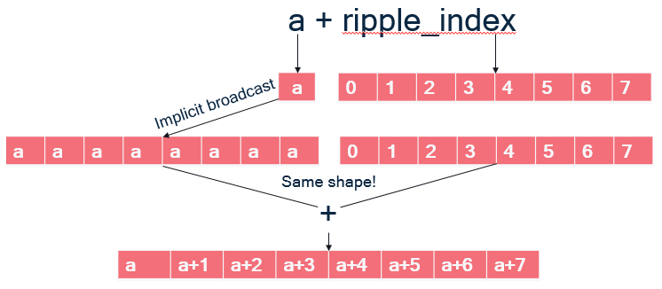

Abstract
Ripple is an API implemented in the C and C++ programming languages designed to allow Qualcomm HTP programmers to concisely express efficient vector kernels across application domains. It utilizes a long-established and target-independent approach of expressing an iteration space over rectilinear, aligned multidimensional arrays (aka tensors) with implicit reshaping and dimensionality changes through broadcasts and reductions. While the basic scalar optimizations of the LLVM compiler, such as register allocation and instruction scheduling, are available, the philosophy otherwise is to let the Ripple programmer directly indicate, through this API, the key decisions on how the kernels should be vectorized. So, while the core of the API is target-independent,
clear rules allow the programmer to reason about the way that their expression of the algorithm in Ripple results in that vectorization. Ripple automates secondary decisions and bookkeeping; the programmer does not need to fuss with those details.
Since Ripple is accessed in the native language form of function calls, there is both an aesthetic smoothness and the impact and implementation of Ripple in the tool chain (debuggers, compilers, etc.) is simple. While automated mapping exists in other compiler systems, and in research papers, Ripple’s place in the programming tool spectrum is on the side of enabling the programmer to tell the compiler to “do what I want” and to do so in terms of the symmetries and mathematic structures of the application, and minimized details of the hardware.
In some cases, target-specific concepts are introduced congruent to Ripple that allow the programmer to directly get at target hardware features (e.g., memory permutation instructions). While the goal of Ripple is to allow programmers to rapidly get kernels that run close to the speed of hand-written code, in some cases, we see performance greater than hand code due to the opportunities for optimization that clean expression enables.
Ripple is closest to CUDA (R), OpenCL (R) and OpenMP (R) and users who are familiar with those languages will find Ripple straightforward. However, it is not necessary to know any of those languages to program in Ripple. The core of Ripple is a SPMD expression of iterations similar to CUDA (R) and OpenMP (R). This core is extended with for expression parallel application over a tensor, as loops. This loop parallelism capability is entirely syntactic sugar for SPMD expressions.
CUDA is a trademark of NVIDIA Corporation.
OpenCL is a trademark of Apple Incorporated.
OpenMP is a registered trademark of the OpenMP Architecture Review Board.
Copyright (c) 2024-2025 Qualcomm Innovation Center, Inc. All rights reserved. SPDX-License-Identifier: BSD-3-Clause-Clear
License
Clear 3-clause BSD License
Copyright (c) 2025 Qualcomm Technologies, Inc. All rights reserved.
Redistribution and use in source and binary forms, with or without modification, are permitted (subject to the limitations in the disclaimer below) provided that the following conditions are met:
-
Redistributions of source code must retain the above copyright notice, this list of conditions and the following disclaimer.
-
Redistributions in binary form must reproduce the above copyright notice, this list of conditions and the following disclaimer in the documentation and/or other materials provided with the distribution.
-
Neither the name of the copyright holder nor the names of its contributors may be used to endorse or promote products derived from this software without specific prior written permission. NO EXPRESS OR IMPLIED LICENSES TO ANY PARTY’S PATENT RIGHTS ARE GRANTED BY THIS LICENSE. THIS SOFTWARE IS PROVIDED BY THE COPYRIGHT HOLDERS AND CONTRIBUTORS “AS IS” AND ANY EXPRESS OR IMPLIED WARRANTIES, INCLUDING, BUT NOT LIMITED TO, THE IMPLIED WARRANTIES OF MERCHANTABILITY AND FITNESS FOR A PARTICULAR PURPOSE ARE DISCLAIMED. IN NO EVENT SHALL THE COPYRIGHT HOLDER OR CONTRIBUTORS BE LIABLE FOR ANY DIRECT, INDIRECT, INCIDENTAL, SPECIAL, EXEMPLARY, OR CONSEQUENTIAL DAMAGES (INCLUDING, BUT NOT LIMITED TO, PROCUREMENT OF SUBSTITUTE GOODS OR SERVICES; LOSS OF USE, DATA, OR PROFITS; OR BUSINESS INTERRUPTION) HOWEVER CAUSED AND ON ANY THEORY OF LIABILITY, WHETHER IN CONTRACT, STRICT LIABILITY, OR TORT (INCLUDING NEGLIGENCE OR OTHERWISE) ARISING IN ANY WAY OUT OF THE USE OF THIS SOFTWARE, EVEN IF ADVISED OF THE POSSIBILITY OF SUCH DAMAGE.
Ripple
Ripple is a compiler-interpreted API to express SPMD (Single Program, Multiple Data, as with CUDA(R) and OpenCL(R)) and loop-annotation parallelism (as with OpenMP(R)).
Implementation note: The current Ripple implementation only supports SIMD code generation.
Ripple does not modify the underlying language syntax, but complements it with parallel semantics. Ripple has a C and C++ implementation through Clang/LLVM.
In the next sections, we provide a quick introduction to both parallel programming models that are enabled by Ripple: SPMD and loop annotations. These are discussed in greater detail in the SPMD and loop annotation chapters.
How to represent a set of parallel processing elements
Parallel processing elements (PEs) are organized as a “block”, i.e. an array of processing elements. Each PE is an element of the array, which can be accessed using as many integer indices as there are dimensions in the array. In this section, we will only consider one-dimensional blocks to illustrate the parallel programming models enabled by Ripple. Please refer to the section on multi-dimensional blocks for additional details.
To express the amount of parallel processing elements that we want to use, we have to declare a block of these PEs, using
ripple_block_t ripple_set_block_shape(int pe_id, size_t ... shape);
These PEs are a software view of the hardware PEs that will actually run the code. Ripple defines an implicit mapping from PEs in a block to hardware processing elements.
Implementation note: The first parameter, pe_id,
has currently no effect,
since Ripple supports only a target with one SIMD engine.
In future Ripple versions, pe_id will correspond to representations of
parallel processing elements in a machine model.
For now, using 0 is fine.
For instance, the following function call tells Ripple that parallel code will
run on a one-dimensional block of 42 parallel processing elements.
The type of processing elements is “lanes of the default SIMD engine”
(the only one supported yet), represented by pe_id=0.
ripple_block_t BS = ripple_set_block_shape(0, 42);
A better idea is to define a pre-processor variable to 0 now,
and modify that definition as the pe_id semantics evolve, as in:
#define VECTOR_PE 0
...
ripple_block_t BS = ripple_set_block_shape(VECTOR_PE, 32);
size_t v = ripple_id(BS, 0);
We use either system interchangeably in this document.
In the future, Ripple may target a hierarchical parallel machine, and pe_id
will index that hierarchy.
How to write a parallel program
Now that we have declared our targeted block of processing elements, there are two ways Ripple allows us to express parallelism: the SPMD model and the loop annotation model.
SPMD model
In the SPMD model,
the function executes a mix of scalar and parallel computations.
Each parallel processing element (PE) is identified by its index in the block,
which we can represent using ripple_id():
size_t ripple_id(ripple_block_t block_shape, int dim);
Everything in the function that depends upon the index in a PE block is executed by an element of the block. In other words, it’s executed in parallel. Everything that does not depend upon a PE block index is scalar.
SIMD vector engines execute the function in a tightly-coupled way, meaning that they synchronize at each instruction.
The following program defines its target to be a block of 42
processing elements.
Each element of the block loads one element of a and b,
sums them and stores them into c.
void array_vadd(float a[42], float b[42], float sum[42]) {
// Defines a one-dimensional block of size of 42
ripple_block_t BS = ripple_set_block_shape(VECTOR_PE, 42);
// Retrieves a block of indices:
// [0 ... 41]
size_t ripple_index = ripple_id(BS, /* Tensor index */ 0);
// Block load/store/addition by indexing arrays using the ripple index
sum[ripple_index] = a[ripple_index] + b[ripple_index];
}
Loop annotation model
In the loop annotation model, we tell Ripple to distribute all the
iterations of a loop onto the elements of the block.
This is done by calling ripple_parallel(ripple_block_t block_shape, int dimension)
right before the loop that needs to be distributed.
Using this principle, the array_vadd function above can be
written as follows.
void array_vadd(float a[42], float b[42], float sum[42]) {
// Defines a one-dimensional block of size of 42
ripple_block_t BS = ripple_set_block_shape(VECTOR_PE, 42);
// Distributes values of "i" (and anything that depends upon "i")
// across dimension 0 of the block
ripple_parallel(BS, 0);
for (size_t i = 0; i < 42; ++i) {
sum[i] = a[i] + b[i];
}
}
Notice that the implementation of array_vadd
based on loop annotations is much closer to a sequential implementation,
which usually makes the code more readable.
However, loop annotations are only applicable to loop parallelism,
and subject to syntactic constraints.
Please consult the chapter on loop annotations for more detail.
Ripple SIMD programming API
While both the SPMD and loop annotation APIs allows us to write element-wise programs, SIMD programs often involve operations across hardware vector elements, such as reductions (applying a commutative operation across PEs) and shuffles (reordering the data associated with PEs). Ripple defines an API to perform these common operations, detailed as part of the Ripple API section.
Command-line
The SPMD and loop annotation models are enabled by the use of the following clang command-line argument:
-fenable-ripple
CUDA is a trademark of NVIDIA Corporation.
OpenCL is a trademark of Apple Incorporated.
Copyright (c) 2024-2025 Qualcomm Innovation Center, Inc. All rights reserved. SPDX-License-Identifier: BSD-3-Clause-Clear
The Single Program, Multiple Data (SPMD) programming model in Ripple
SPMD is a way to express parallel computations in programs where repetitive work needs to be distributed among a set of processing elements (PEs).
Since CUDA(R) and OpenCL(R) are also SPMD parallel programming abstractions, CUDA and OpenCL developers will find Ripple familiar. However, there are some important differences with CUDA and OpenCL, which we stress in a the Ripple vs. CUDA and OpenCL section.
To create a parallel program using the SPMD model, a user has to specify which PE will execute which portion of the program. Developers use the following steps to express the parallel execution of their program onto the processing elements of the targeted computer. They:
- Represent the set of processing elements as a “block”
- Define their code as a function of the processing element’s indices in the block.
- Keep in mind that a block is a software abstraction, mapped by Ripple to the hardware.
In the next subsections, we illustrate how this is done concretely in the SPMD model, using the following example, which adds two 42-long vectors using a block of 42 elements.
#define VECTOR_PE 0
void array_add(float a[42], float b[42], float sum[42]) {
// 1) Defines a block of 42 processing elements (as a one-dimensional block)
// These PEs map to the vector lanes of a SIMD vector engine
ripple_block_t BS = ripple_set_block_shape(VECTOR_PE, /* block index 0 with size */ 42);
// 2) Retrieves a block of logical indices of this block's dimension
// [0 ... 41]
size_t ripple_index = ripple_id(BS, /* block dimension */ 0);
// Block load/store/addition by indexing arrays with a block
sum[ripple_index] = a[ripple_index] + b[ripple_index];
}
Representing processing elements as a block
SPMD represents the set of processing elements as a block, which is an array of processing elements. The user can choose the dimension of the block to be one, two or more (up to ten), depending upon their needs (we address this question in the Optimization Guide).
Each PE being represented as an element of the block, we can now index into that block to designate any PE in the block. In short, each PE is defined by its indices in the block.
In Ripple, we define the shape of the block for a set of processing elements by calling
ripple_block_t BS = ripple_set_block_shape(int pe, size_t ... shape);
where pe_id defines the PE
(Implementation note: use 0 for pe_id, as the supported target machine
consists of one block of SIMD processing elements),
and shape defines the size of the block
along dimensions 0, 1, etc.
The number of sizes passed to ripple_set_block_shape
determines the dimension of the block for pe_id.
For example, we declare a 8 x 4-shaped block of PEs identified as VECTOR_PE
as follows:
ripple_block_t block_shape = ripple_set_block_shape(VECTOR_PE, 8, 4);
And we declare a one-dimensional block of size 42 as:
ripple_block_t block_shape = ripple_set_block_shape(VECTOR_PE, 42);
Once the block shape is defined,
the size of the block along any dimension dimension is provided by
size_t ripple_get_block_size(ripple_block_t block_shape, size_t dimension);
Defining code as a function of the PE indices
In the SPMD model, PEs in a block are all executing the same code, but the behavior of each PE can vary as a function of its indices in the block.
We express the index of a PE for a given dimension
using the ripple_id(ripple_block_t block_shape, int dim) function.
For example, in the following code excerpt,
we have a block of 26 PEs,
and each PE stores one letter of the alphabet into array alphabet.
ripple_block_t BS = ripple_set_block_shape(0, 26);
alphabet[ripple_id(BS, 0)] = 'a' + ripple_id(BS, 0);
In Ripple, every part of the code that depends upon a given block index
is executed in parallel.
In one dimension, this means that all code that depends upon ripple_id(BS, 0)
is executed by all the elements of the one-dimensional block.
The case of multi-dimensional blocks is more subtle,
in that blocks of different dimensions can coexist in a same function.
The shape of the block executing a given statement is determined
by the dimensions of all the ripple_id() this statement depends upon.
That way, scalar, vector and tensor operations can coexist in the same function.
Please refer to Sections Multi-dimensional SPMD in Ripple
below for more detail.
Mapping software processing elements to hardware processing elements
The last part of Ripple is that the blocks are a software abstraction. In particular, the number of PEs in a block doesn’t have to match the number of hardware PEs that will run the code.
In order to provide full control of how the hardware is utilized, Ripple defines a fixed mapping from software PEs in blocks to hardware PEs (e.g. vector lanes in a SIMD vector engine).
In other words, Ripple defines how the PEs in a block are laid out in hardware vectors (and matrices). For vector targets, the layout is column-major.
The following figure illustrates how various blocks (including 2-d ones)
are laid out in vectors of 8 lanes.

Coalescing
One aspect of this mapping is very important for performance optimization: dimension 0 is always laid out contiguously in a vector. This is important because for vector machines, the most efficient way to load values into a vector is when these values are laid out contiguously in memory. Such a load is said to be coalesced. The same is true for vector stores.
To obtain coalesced loads and stores, consecutive indices along dimension 0 must access contiguous elements of memory. This is explained in greater detail in the coalescing section of the optimization guide.
Determining the shape of a value in a Ripple program
In a Ripple function, each computed value is associated with a block shape, representing the block that computes it. We call this the “shape” of said value.
The shape of an operation in Ripple is implicitly determined by the shape of its
operands, and ripple_id(BS, x) represents a one-dimensional shape,
with non-trivial dimension x, and all other dimensions set to 1,
as illustrated in the code below.
ripple_block_t BS = ripple_set_block_shape(0, 8, 8);
size_t v0 = ripple_id(BS, 0); // shape(v0) = 8x1
size_t v1 = ripple_id(BS, 1); // shape(v1) = 1x8
size_t v_sum = v0 + v1; // shape = 8x8
This is what we call implicit broadcasting. Additionally, some special Ripple functions explicitly define an output shape as a function of their input shape, by adding or removing dimensions. We explain these in the following subsections.
Implicit broadcasting
In Ripple, block shapes flow through values (dataflow).
When values of different shapes are operands of a function/operator
(e.g., binary operators +, -, *, etc),
their shapes are broadcast to the largest common shape shared by both
operands before being processed.
Let’s revisit our addition example to understand how the last statement works, this time using an 8-wide block:
#define VECTOR_PE 0
void vector_add_1D(unsigned pindex, float *a, float *b, float *sum) {
ripple_block_t BS = ripple_set_block_shape(VECTOR_PE, /* block index 0 with size */ 8);
size_t ripple_index = ripple_id(BS, /* block index */ 0);
// What is going on here?
sum[ripple_index] = a[ripple_index] + b[ripple_index];
}
The last statement uses ripple_index, which equals the ripple_id() and
means that there is block semantics being propagated, but how?
- In C/C++, array accesses such as
a[ripple_index]are syntactic sugar for doing pointer arithmetic, meaning is it equivalent to computing an address and dereferencing it:a[ripple_index] = *(a + ripple_index) a + ripple_indexis a binary operator taking a pointeraand a 8-wide block offsetripple_index. As illustrated on the Figure below:ais scalar; implicit broadcast dictates that it must be broadcast to the same shape as its other operand to+, an 8-wide block, so that the+can be applied element-wise to the vector elements of its operands and form an 8-wide block. - The pointer arithmetic addition thus results in a block of addresses.
- Finally, dereferencing
*(a + ripple_index)means loading a block of addressesa + ripple_index, which gives the block of floats that were at these addresses.
The same happens with b[ripple_index].
The addition can proceed because
a[ripple_index] has the same block shape and the store to sum[ripple_index]
works similarly.
If you have worked with Python’s numpy library, which uses the same
broadcasting semantics of operands, you will feel at home with Ripple.
Shape-modifying functions
There are three types of Ripple API functions that explicitly modify shapes
between their input and output values.
For the purpose of illustration here, let us assume an 8x8 block,
and that one_d_x is a 8x1 value and two_d_x is an 8x8 value.
- reductions, which perform an operation
that combines slices of the incoming shape with each other.
For instance:
ripple_reduceadd(0b1, one_d_x)adds all the elements of one-dimensional valueone_d_xalong dimension0. Its output is a scalar (i.e., a zero-dimensional value).ripple_reducemax(0b10, two_d_x)takes the maximum of two-dimensional valuetwo_d_xalong dimension1(because bit1of the first argument is set but not bit0). Its output value is hence8x1: a one-dimensional value expressed in a two-dimensional space.
- slicing, which extracts a slice from the block along some dimensions.
For example:
ripple_slice(two_d_x, 1, -1)takes all the elements of indices (1, *) fromtwo_d_x. Its output value has a1x8shape.ripple_slice(two_d_x, 2, 3)takes element (2, 3) fromtwo_d_x. Its output value is scalar.
- broadcasts (also often called “splats”).
Besides implicit broadcasts offered by Ripple, we can also
explicitly broadcast a value along any set of dimensions.
For instance,
ripple_broadcast(VECTOR_PE, 0b10, one_d_x)replicates the8x1valueone_d_xalong dimension1, outputting it as an8x8value.
Please refer to the Ripple API Specification for more detail on these API functions.
Multi-dimensional SPMD in Ripple
Part of Ripple’s objective to be as efficient as possible forced
an interpretation of multi-dimensional blocks
that is different from the one known in CUDA(R) and OpenCL(R).
In Ripple, values of different dimensions can coexist in the same function.
The shape of a value is determined implicitly by the dimensions of its operands
through implicit broadcast,
or explicitly for ripple_id and the shape-modifying functions.
Consider for instance the following matrix multiply program,
in which a 2-dimensional block is declared, with two indices x and y.
1: matmul(float A[N][M], float B[K][N], float C[K][M]) {
2: ripple_block_t BS = ripple_set_block_shape(VECTOR_PE, 8, 8);
3: assert (N % 8 == 0);
4: assert (M % 8 == 0);
5: size_t x = ripple_id(BS, 0);
6: size_t y = ripple_id(BS, 1);
7: for (int i = 0; i < N; i+= 8) {
8: for (int j = 0; j < M; j+= 8) {
9: A[i + y][j + x] = 0;
10: for (int k = 0; k < K; ++k) {
11: A[i + y][j + x] += B[k][i + y] * C[k][j + x];
12: }
13: }
14: }
15: }
Fig.smpd-1: An outer-product matrix multiply kernel.
Let’s assume that the targeted SIMD vector engine can do
64 single-precision floating-point computations at a time,
i.e. it has 64 32-bit vector lanes.
Line 9 performs a 2-dimensional store of 0 into A.
The constant 0 does not depend upon any ripple_id,
so according to implicit broadcasting, it has dimension 0 (i.e., it’s a scalar).
However, since the write to A is 2-dimensional,
0 gets broadcast to a 2-d block of 0’s, which then gets stored in A.
In short, line 9 initializes a whole 8x8 tile of A to the value 0.
Let’s go through the steps of what Line 11 does. The value
C[k][j + x]
depends upon x, the block index along dimension 0.
Hence it loads a 1-dimensional (a row of 8x1) block of elements from C.
The value
B[k][i + y]
depends upon y, the block index along dimension 1.
Hence it loads a 1-dimensional (column of 1x8) block of elements from B.
These two 1-dimensional blocks of elements meet in a multiplication:
B[k][i + y] * C[k][j + x]
The multiplication depends upon both x and y, which means its shape is 8x8.
According to implicit broadcast rules:
- the left-hand side, which was 1x8, is broadcast along dimension 0 to an 8x8 shape
- the right-hand side, which was 8x1, is broadcast along dimension 1 to an 8x8 shape
Both sides of the multiplication now have the same shape, hence the element-wise multiplication can happen, resulting in an 8x8 shape. Finally, the 8x8 block resulting from the multiplication is added to an 8x8 tile of A.
The above way of computing a matrix multiplication is called “outer product”,
because it corresponds to an outer product between the vectors loaded from
C and B.
What’s interesting in this example is that we see how computations on different shapes coexist in the same function.
- the assertions and the computations of the values of
iandjare done in scalar - a 8x1 vector is loaded from
C. We could imagine doing some more 8-1-shaped computations before the multiplication. - a 1x8 vector is loaded from
B. - There are 8x8 multiplication, accumulation and stores.
As we’ll see below, this way of mixing computations of different dimensionalities is different from other SPMD languages like CUDA and OpenCL, in which all the computations in the function would be 8x8, i.e. they would each be done by 64 processing elements.
How conditionals affect SIMD code
Code controlled by conditionals that depend upon block indices are translated into masked code, a vector predication representation that represents how SIMD instructions implement conditionals at the vector lane granularity. This is explained in Subsection Masking below.
In the subsequent subsection, we also go over a point worth noting in the determination of shapes in Ripple: they are not dependent upon conditionals, only upon the implicit broadcasting rules and the special shape-modifying API (as stated above).
Masking
Consider the following sequential example, which increments
even numbers in a vector pointed to by x:
void increment_even(int16_t x[64]) {
for (size_t v = 0; v < 64; ++v)
if (v % 2 == 0)
x[v] += 1;
}
We can easily write its vectorized version using Ripple as follows:
1: void increment_even(int16_t x[64]) {
2: ripple_block_t BS = set_ripple_block_shape(VECTOR_PE, 64);
3: size_t v = ripple_id(BS, 0);
4: if (v % 2 == 0)
5: x[v] += 1;
6: }
Ripple turns this code into SIMD vector code.
To respect the original function’s semantics, Ripple has to only run the
elements of the block x[v] for which v % 2 == 0 is true.
This is performed by masking the x[v] store,
i.e. applying the 64-wide block of booleans (called a mask)
from Line 4’s condition to Line 5’s block of increments.
The mask defines which elements need to be performed and which ones shouldn’t.
Pairing the mask with the store in line 5 results in a masked store,
which is how SIMD hardware allows for the selective storing of vector elements.
In short, masking is the transformation of a condition that depends upon
one or more ripple_ids into a mask, which is then applied to operations
controlled by said condition.
Ripple only actually masks three necessary operations to render a correct program:
- stores (writes)
- loads (reads)
- reductions
How shape affects masking
To more fully specify how Ripple works, let us illustrate how masking is applied in a more complex case, when a condition involves more dimensions than the computation it controls.
Consider the following code:
1: void increment_even(int16_t x[8], int16_t y[8], int16_t z[8][8]) {
2: ripple_block_t BS = ripple_set_block_shape(VECTOR_PE, 8, 8);
3: size_t v0 = ripple_id(BS, 0);
4: size_t v1 = ripple_id(BS, 1);
5: if (v0 % 2 == 0) { // 8x1 condition (mask)
6: x[v0] += 1; // 8x1
7: y[v1][v0] += 1; // 8x8
8: w += 1; // scalar, i.e. 1x1
9: z[v1] += 1; // 1x8
10: }
11:}
How does the v0 % 2 == 0 condition apply to the three statements it controls,
lines 6-9?
The condition’s shape is 8x1, but the shapes of these three statements
are different from each other.
Line 6 is the case we already know:
the conditional has the same shape as the statement,
hence the 8x1 mask (i.e. block of booleans) applies element-wise
to each of the 8x1 operations in line 6.
Line 7 exposes a shape mismatch between the 8x1 condition
and the computation, which is 8x8.
Implicit broadcast takes care of this case:
the 8x1 conditional is broadcast (i.e., replicated) along dimension 1,
and applied element-wise to the line 7 computation.
Line 8 is trickier, because the 8x1 condition shape cannot be broadcast
to Line 7’s 1x1 computation.
The rule here is that the Line 8 statement should execute whenever there
exists a value of v0 for which v0 % 2 == 0.
To obtain such a mask, Ripple takes the OR of all elements in the condition,
which makes a 1x1 mask.
Finally, line 9 combines the two previous principles for applying a mask
to a differently-shaped computation:
the Line 5 mask is first OR-reduced to a 1x1 mask,
and then broadcast along dimension 1, resulting in a 1x8 mask,
which can be applied to the 1x8 Line 8 computation.
Implicit scalar expansion
Consider our Fig. smpd-1 outer-product example, but where we want to
perform the tile matrix multiplication (i.e. line 11) using two
statements:
- one to compute the (two-dimensional) outer product between the one-dimensional vectors
- the other one to accumulate the outer product onto
A. We would then rewrite Line 11 into two lines, as such:
1: void matmul(float A[N][M], float B[K][N], float C[K][M]) {
2: ripple_block_t BS = ripple_set_block_shape(VECTOR_PE, 8, 8);
3: assert (N % 8 == 0);
4: assert (M % 8 == 0);
5: size_t x = ripple_id(BS, 0);
6: size_t y = ripple_id(BS, 1);
7: float tmp[8][8];
8: for (int i = 0; i < N; i+= 8) {
9: for (int j = 0; j < M; j+= 8) {
10: A[i + y][j + x] = 0;
11: for (int k = 0; k < K; ++k) {
12: tmp[y][x] = B[k][i + y] * C[k][j + x];
13: A[i + y][j + x] += tmp[y][x];
14: }
15: }
16: }
17: }
Fig. spmd-2: Breaking down the outer product into two statements
Notice that we had to introduce a temporary variable tmp
to store the 8x8 value of the outer product.
Having to declare an array whenever we introduce a temporary is far from ideal:
- Code can quickly become less readable if we add array accesses for each temporary variable.
- It’s easier to introduce inconsistencies
(in particular, out-of-bounds array issues)
if we decide to change the block shape.
In this example, we would have to modify the dimensions of
tmpas well. - Compilers are often less good at optimizing array code than scalar code.
For these reasons, Ripple allows scalar variables to automatically adopt the shape of the value that gets assigned to them. We call this mechanism scalar expansion, and with it, in our example we can write the following nicer code instead:
void matmul(float A[N][M], float B[K][N], float C[K][M]) {
ripple_block_t BS = ripple_set_block_shape(VECTOR_PE, 8, 8);
assert (N % 8 == 0);
assert (M % 8 == 0);
size_t x = ripple_id(BS, 0);
size_t y = ripple_id(BS, 1);
for (int i = 0; i < N; i+= 8) {
for (int j = 0; j < M; j+= 8) {
A[i + y][j + x] = 0;
for (int k = 0; k < K; ++k) {
float tmp = B[k][i + y] * C[k][j + x];
A[i + y][j + x] += tmp;
}
}
}
}
Fig. spmd-3: 2-statement outer product using implicit scalar expansion
where tmp is declared as a scalar,
and is scalar-expanded to an 8x8 value for us by Ripple.
Store consistency
The implicit scalar expansion mechanism is only available for scalars. Otherwise, as we have seen, shapes are determined by the implicit broadcast rule and the shape-modifying Ripple API.
Shape consistency is the responsibility of developers.
The main example where we can write inconsistent code is when
storing a value of dimension n to a memory region of dimension less than n,
as in the following example:
ripple_block_t BS = ripple_set_block_shape(VECTOR_PE, 8, 8);
size_t v0 = ripple_id(BS, 0);
size_t v1 = ripple_id(BS, 1);
float x = A[v0] + B[v1]; // shape of x is 8x8
C[v0] = x; // storing an 8x8 value to a 8x1 memory region is illegal
Keep implicit scalar expansion simple
The implicit scalar expansion mechanism is really meant for temporaries, so we can keep writing code that looks readable because it looks scalar. We discourage sophisticated use of these temporary scalars, such as using the address of tmp, as the resulting semantics, although well-defined, become harder to follow.
Take the following vector inner product as an example.
1: int32_t inner_product(int * scratchpad, short * v1, short * v2, size_t n) {
2: assert(n % 64 == 0);
3: ripple_block_t BS = ripple_set_block_shape(VECTOR_PE, 64);
4: size_t v = ripple_id(BS, 0);
5: size_t nv = ripple_get_block_size(BS, 0);
6: int32_t result = 0;
7: for (int block = 0; block <n; block += nv) {
8: *scratchpad = v2[block * nv + v];
9: result += v1[block * nv + v] * (*scratchpad);
10: }
11: return ripple_reduceadd(0b1, result)
12: }
Here, the developer is seemingly trying to force the temporary to be
at an address defined by the scratchpad pointer.
The result variable is a scalar, hence it gets expanded inside the loop,
and it comes out of the loop as a 64-wide 1-dimensional block.
This is no problem.
scratchpad is different. While *scratchpad represents a scalar value,
it is really a scalar (i.e., zero-dimensional) access to array scratchpad.
A better way to see this is to use the equivalent array notation to access
scratchpad in lines 8 and 9:
8: scratchpad[0] = v2[v];
9: result += v1[block * nv + v] * scratchpad[0];
With this version, it becomes obvious that the developer tries to store
the 1-dimensional block v2[v] into the zero-dimensional array location
scratchpad[0] on line 8, resulting in a shape mismatch.
In contrast, note that the scratchpad access on line 9 is legal:
it is a scalar load from scratchpad,
which gets implicitly broadcast to fit the 1-d shape of the other multiplication.
Command-line
The SPMD form is used by default when enabling Ripple at the command line:
clang -fenable-ripple ...
CUDA is a trademark of NVIDIA Corporation.
OpenCL is a trademark of Apple Incorporated.
Copyright (c) 2024-2025 Qualcomm Innovation Center, Inc. All rights reserved. SPDX-License-Identifier: BSD-3-Clause-Clear
Distributing loop computations in Ripple
Inspired by the simplicity of the OpenMP(R) programming model, we introduced a couple functions in the Ripple API to achieve similar ways of expressing loop parallelism.
The main idea of loop-based parallelism applies to loop computations, in the case when the iterations of a given loop are considered independent from each other. In this case, they can be executed in parallel, by assigning each iteration to a parallel processing element.
The following Figure represents values of an “i” loop (in blue)
being distributed onto blocks of size 8 (in orange),
in a function that performs an element-wise addition.
We illustrate the distribution for n = 19. VECTOR_PE is zero.

In the vadd function, we can see two calls to the ripple API:
ripple_set_block_shape(VECTOR_LANE, 8)models the set of parallel processing elements to run the function as a block of size 8. TheVECTOR_LANEparameter represents that the kind of targeted processing elements (the lanes of a fictitious vector engine here). This notion of block is the same as the one used in the SPMD programming model supported by Ripple. In fact, loop annotations are syntactic sugar that make SPMD programs more readable.ripple_parallel(BS, 0)indicates that the immediate next statement is a loop whose iterations should be distributed to the blockBS. The mapping between values ofiand block index is cyclical, i.e., computations made for loop indexiare mapped to block indexi % 8. The 8 in the mapping is the block size (along the one and only dimension of the block, 0).
Benefits compared with SPMD programming
The main advantage of loop annotations is that we can just find a
loop whose iterations are independent and which accesses data contiguously,
and declare this a parallel loop.
When the number of iterations in the parallel loop does not exactly
match the block size, ripple_parallel takes care of
separating the loop into a full-vector loop and an epilogue.
In the SPMD model, we need to perform that separation explicitly.
The vadd example provides a good means of comparison with SPMD.
The code below is the equivalent function in SPMD.
void vadd(size_t n, float A[n], float B[n], float C[n]) {
size_t i;
ripple_block_t BS = ripple_set_block_shape(VECTOR_PE, 8);
size_t nv = ripple_get_block_size(BS, 0);
size_t v = ripple_id(BS, 0);
for (i = 0; i + nv <= n; i += nv) { // Full vector loop
C[i + v] = A[i + v] + B[i + v];
}
// Masked, partial vector epilogue
if (i + v < n) {
C[i + v] = A[i + v] + B[i + v];
}
}
Since n is unknown, we have to take into account the case when
n is not a perfect multiple of the block size, 8.
When it is not, the last vector will have to load and store
only the values that are within the array bounds, i.e., less than n.
To do so efficiently, we first compute a loop for the cases when we know
that the full vector needs to be loaded, computed and stored.
Let’s call it the full-vector loop.
Then, the last, partial vector needs to be computed in a so-called epilogue.
That last computation is controlled by the conditional i + v < n
to avoid out-of-bounds accesses.
The comparison between implementations is straightforward:
- The
ripple_parallel()-based implementation is about half as long. - It is also just as readable as the sequential implementation, only with two extra lines of code. The SPMD version is less readable.
- the
ripple_parallel()version takes care of full-vector and epilogue separation behind the scenes.
Full-vector cases
It may happen that the loop we want to distribute actually fits perfectly
onto the targeted block size.
In this case, computing an epilogue seems wasteful.
Use the ripple_parallel_full() function,
which doesn’t generate the epilogue.
Pragma form
In C and C++, calls to ripple_parallel are implemented
under the hood as a pragma decorating the following loop.
Here’s the syntax for it:
#pragma ripple parallel Block(block_shape) Dims(<dim ...>) [NoRemainder]
block_shape_variable, aripple_block_tvalue, i.e., the output ofripple_set_block_shape()stored in a variable. You cannot pass the call toripple_set_block_shape()directly to aBlock()construct. TheNoRemainderclause turns on the full-vector assumption, in which the epilogue isn’t generated.
Block index access
The ripple_parallel annotation basically chunks the annotated loop
by the size of the block dimensions associated with it.
The resulting loop basically iterates over blocks,
and the original loop variable (let’s call it i)
can be retrieved from the block loop iterator (let’s call it b)
and the ripple index associated with the loop (let’s call it v).
Let’s assume that we have distributed our i loop along block dimension 1.
i, b and v are related through:
i = ripple_get_block_size(block_shape, 1) * b + ripple_id(block_shape, 1)
The ripple_parallel_idx() API provides access to the block loop operator (b).
Hence if we distribute loop i along dimension d,
we have the identity:
i = ripple_get_block_size(block_shape, d) * ripple_parallel_idx(block_shape, d) + ripple_id(block_shape, d)
When ripple_parallel is used to distribute loop iterations over
more than one block dimension, the use of ripple_parallel_idx is expected
to be consistent with these dimensions.
Using ripple_parallel_idx outside of ripple_parallel-annotated loops
results in an error.
Syntactic constraints
The syntax for loops that follow a
ripple_parallel() call must follow a rigid syntax.
An error is returned upon violation of these syntax rules.
- The initialization (lower bound) cannot be an expression; it must be a constant or a variable name.
- The exit test (upper bound) must compare the loop counter using
<with a constant or a variable name. - The loop counter step must be one (as in
++iori++).
For instance, the following code is unsupported because its upper bound is syntactically too complex.
#define VECTOR_PE 0
void vecadd_subarray(int N, int start, int end,
float x[N], float y[N], float xpy[N]) {
ripple_block_t BS = ripple_set_block_shape(VECTOR_PE, 32);
ripple_parallel(BS, 0);
for (int i = start; i < min(end, 129); ++i) {
xpy[i] = x[i] + y[i];
}
}
Fortunately, there is an easy workaround.
We can precompute the min expression into a variable,
and use that variable as the upper bound, as follows.
void vecadd_subarray(int N, int start, int end,
float x[N], float y[N], float xpy[N]) {
ripple_block_t BS = ripple_set_block_shape(VECTOR_PE, 32);
size_t my_min = min(end, 129);
ripple_parallel(BS, 0);
for (int i = start; i < my_min; ++i) {
xpy[i] = x[i] + y[i];
}
}
While these syntactic constraints theoretically make the loop annotation parallel programming model less generally expressive than the SPMD model, we expect that it will still allow parallelization of a large portion of code, if not all of it.
General principles
At a high level, the difference between this loop annotation model and the SPMD model is that the annotation model introduces an automated way to distribute loop iterations. The loop annotation model is implemented as syntactic sugar on top of the SPMD model. Hence, all aspects of the SPMD model are maintained in the loop annotation model, in particular:
- Computations are represented as blocks.
- Multi-dimensional blocks are supported. To achieve this, multiple loops may be distributed onto a block.
- We can access a block element using
ripple_id(). This is similar to usingomp_get_thread_num()in OpenMP(R) loops. - The shape of a computation is still determined by implicit broadcasting and special shape-modifying functions.
- How conditionals affect parallel code.
- Implicit scalar expansion.
Each of these concepts is presented in the chapter describing SPMD programming with Ripple.
OpenMP is a registered trademark of the OpenMP Architecture Review Board.
Copyright (c) 2024-2025 Qualcomm Innovation Center, Inc. All rights reserved. SPDX-License-Identifier: BSD-3-Clause-Clear
The Ripple API specification
C API (SPMD)
/// \brief returns a block shape for processing element with id \p pe_id
ripple_block_t ripple_set_block_shape(int pe_id, size_t ... shape);
/// \brief size of the block associated to \p BS along dimension \p dim
size_t ripple_get_block_size(ripple_block_t block_shape, int dim);
/// \brief SPMD coordinate of the block \p BS along dimension \p dim
size_t ripple_id(ripple_block_t block_shape, int dim);
/// \brief reduction along dimensions defined by the bitfield dims,
/// using the operator "add".
/// 'TYPE' can be any one of (u?)int(8|16|32|64) and _Float16/float/double.
///
/// Although illustrated for "add" here,
/// reductions are also defined for the following operators:
///
/// add, mul, max, min, and, or, xor.
///
/// Floating-point types additionally support 'minimum' and 'maximum'.
/// These differ from 'min' and 'max' in their handling of NaN values.
///
/// The following table summarizes behavior in the presence of signaling (sNaN)
/// and quiet (qNaN) NaNs:
///
/// +----------------------+---------------------------+--------------------------------+
/// | Float Comparison | min / max | minimum / maximum |
/// +======================+===========================+================================+
/// | NUM vs qNaN | NUM | qNaN |
/// +----------------------+---------------------------+--------------------------------+
/// | NUM vs sNaN | qNaN | qNaN |
/// +----------------------+---------------------------+--------------------------------+
/// | qNaN vs sNaN | qNaN | qNaN |
/// +----------------------+---------------------------+--------------------------------+
/// | sNaN vs sNaN | qNaN | qNaN |
/// +----------------------+---------------------------+--------------------------------+
/// | +0.0 vs -0.0 | +0.0(max)/-0.0(min) | +0.0(max)/-0.0(min) |
/// +----------------------+---------------------------+--------------------------------+
/// | NUM vs NUM | larger(max)/smaller(min) | larger(max)/smaller(min) |
/// +----------------------+---------------------------+--------------------------------+
///
TYPE ripple_reduceadd(int dims, TYPE to_reduce);
/// \brief Explicit broadcast of \p to_broadcast
/// along dimensions of the block shape that are set in the bitfield.
/// 'TYPE' can be any one of (u?)int(8|16|32|64) and _Float16/float/double.
/// The use of this function is typically rare, because of implicit broadcast.
/// For example:
///
/// // Dimension 0 size 32 (bit mask 1) and dimension 1 size 64 (bit mask 2)
/// ripple_block_t BS = ripple_set_block_shape(VECTOR_PE, 32, 64)
/// int src = 42; // Scalar source
/// dst1 = ripple_broadcast(BS, 0b10, src); // promoted to Tensor[64][1]
/// dst2 = ripple_broadcast(BS, 0b01, src); // promoted to Tensor[1][32]
/// dst3 = ripple_broadcast(BS, 0b01, dst1); // promoted to Tensor[64][32]
/// dst4 = ripple_broadcast(BS, 0b11, src); // promoted to Tensor[64][32]
///
TYPE ripple_broadcast(ripple_block_t block_shape, uint64_t dims, TYPE to_broadcast);
/// \brief Explicit pointer broadcast of \p to_broadcast
/// along dimensions defined by the bitfield dims of
/// the given block shape.
/// 'TYPE' can be any one of (u?)int(8|16|32|64)
/// and _Float16/float/double.
TYPE *ripple_broadcast_ptr(ripple_block_t block_shape, uint64_t dims, TYPE *to_broadcast);
/// \brief Extracts a slice of value \p src along the indices \p dims.
/// In \p dims, the -1 value expresses "non-slicing" along the dimension,
/// in the sense that all elements of \p src are maintained along the dimension
/// where -1 is used.
/// For example, assuming the shape of \p src is 8x4:
/// dst = ripple_slice(src, -1, 0) extracts the first 8x1 sub-block of \p src
/// dst = ripple_slice(src, 1, 0) extracts the scalar at position (0, 1)
/// in \p src
/// etc.
/// @param src the value out of which we want a slice
/// @param dims the slicing indices.
/// Their number should match the dimension of \p src,
/// and the values of \p dim must be static constants.
TYPE ripple_slice(TYPE src, int ... dims);
/// \brief `ripple_slice()` for pointers.
TYPE ripple_slice_ptr(TYPE * src, int ... dims);
/// \brief shuffle where the source index is defined as a function of the
/// destination index by function \p src_index_fn
/// defined for all scalar types.
/// 'TYPE' can be any one of (u?)int(8|16|32|64) and _Float16/float/double.
/// When the block is multi-dimensional, this represents a shuffle from
/// a flattened view of \p to_shuffle to a flattened view of the result.
/// The parameters of \p src_index_fn are the flattened destination index
/// and the total block size.
/// If we use the C row-major convention, dimensions are laid out
/// from right (dimension 0) to left in vectors.
/// Hence, in 2 dimension, we'll have flattened(v0, v1) = v1*s0 + v0,
/// where v0 and v1 are the coordinates in the PE block
/// and s0 is the block shape along dimension 0.
/// TYPE is defined for the following types:
/// i8, u8, i16, u16, i32, u32, i64, u64, f16, f32, f64
TYPE ripple_shuffle(TYPE to_shuffle, size_t(*src_index_fn)(size_t, size_t) );
/// \brief creates a block whose elements are picked from \p src1 and \p src2 using \p src_index_fn.
/// \p src_index_fn basically indexes in the flattened concatenation of \p src1 and \p src2.
/// \param src1 the first source block
/// \param src2 the second source block
/// \param src_index_fn a function that takes
// the flat index of the returned block and the total block size,
// and returns the index into the [src1|src2] concatenated source
// array where the destination value should be taken from.
/// TYPE is defined for the following types:
/// i8, u8, i16, u16, i32, u32, i64, u64, f16, f32, f64
TYPE ripple_shuffle_pair(TYPE src1, TYPE src2, size_t(*src_index_fn)(size_t, size_t) );
/// \brief Computes the saturated addition of two values. 'TYPE'
/// can be any one of (u?)int(8|16|32|64)_t.
/// \param x The first value of type TYPE.
/// \param y The second value of type TYPE.
/// \return The result of the saturated addition of x and y.
TYPE ripple_add_sat(TYPE x, TYPE y);
/// \brief Similar to `ripple_add_sat`, but performs subtraction.
TYPE ripple_sub_sat(TYPE x, TYPE y);
/// \brief Similar to `ripple_add_sat`, but performs left shift.
TYPE ripple_shl_sat(TYPE x, TYPE y);
/// \brief Converts a 1-d Ripple block of T to a <N_EL x T> C vector.
/// \param N_EL the number of elements of the output vector.
/// Would normally match the total Ripple block size,
/// but can be bigger.
/// \param T the vector's element type - you can pass it as a parameter
/// because ripple_to_vec is a macro.
/// \param PE_ID the processing element ID
/// for which this conversion is made.
/// \param x the Ripple (block) value that needs to be converted
/// to a C vector
T __attribute__(vector_size(sizeof(T) * N_EL))
ripple_to_vec(size_t N_EL, T, int PE_ID, T x);
/// \brief Same as ripple_to_vec,
/// for a 2-d block made of the 2 first dimensions of the Ripple block.
/// Assumes that the Ripple block shape has at least 2 dimensions.
T __attribute__(vector_size(sizeof(T) * N_EL))
ripple_to_vec_2d(size_t N_EL, T, int PE_ID, T x);
/// \brief Same as ripple_to_vec,
/// for a 3-d block made of the 3 first dimensions of the Ripple block.
/// Assumes that the Ripple block shape has at least 3 dimensions.
T __attribute__(vector_size(sizeof(T) * N_EL))
ripple_to_vec_3d(size_t N_EL, T, int PE_ID, T x);
/// \brief Converts a <N_EL x T> vector to a 1-d Ripple block of type T.
/// \param N_EL the number of elements of the output vector.
/// Would normally match the total Ripple block size,
/// but can be bigger.
/// \param T the vector's element type - you can pass it as a parameter
/// because ripple_to_vec is a macro.
/// \param PE_ID the processing element ID
/// for which this conversion is made.
/// \param x the C vector that needs to be converted
/// to a Ripple (block-) value
T vec_to_ripple(size_t N_EL, T, int pe_id,
T __attribute__(vector_size(sizeof(T) * N_EL))x);
/// \brief Same as vec_to_ripple,
/// for a 2-d block made of the 2 first dimensions of the Ripple block.
/// Assumes that the Ripple block shape has at least 2 dimensions.
T vec_to_ripple_2d(size_t N_EL, T, int pe_id,
T __attribute__(vector_size(sizeof(T) * N_EL))x);
/// \brief Same as vec_to_ripple,
/// for a 3-d block made of the 3 first dimensions of the Ripple block.
/// Assumes that the Ripple block shape has at least 3 dimensions.
T vec_to_ripple_3d(size_t N_EL, T, int pe_id,
T __attribute__(vector_size(sizeof(T) * N_EL))x);
/// \brief Provides the information that the pointer element `(0, 0 ... 0, 0)`
/// in this tensor is aligned at the provided alignment (in bytes).
/// \param ptr A pointer or tensor of pointers
/// \param Alignment The alignment in number of bytes
/// \return Returns ptr
Pointer_TYPE ripple_ptr_alignment(Pointer_TYPE ptr, size_t Alignment)
/// \brief Similar to ripple_ptr_alignment, to indicate a pointer alignment
/// hint, but additionally allows to specify the slicing indices instead of
/// assuming that every slicing index is zero. All non-provided slicing index
/// will be zero.
/// \param ptr A pointer or tensor of pointers
/// \param Alignment The alignment in number of bytes
/// \return Returns ptr
/// \see ripple_slice
/// \see ripple_assume_aligned
Pointer_TYPE ripple_ptr_alignment_slice(Pointer_TYPE ptr, size_t Alignment, SliceIdx [, SliceIdx]*)
C API (loop annotations)
The loop annotation feature is basically syntactic sugar on top of SPMD. Hence, all the SPMD functions inter-operate with the loop annotation functions below.
/// Followed by a loop with simple initialization and upper bound,
/// tells the compiler to distribute the processing elements identified by
/// \p pe_id along dimension \p dims of the block of said processing elements.
/// The list of dimensions in \p dims is ordered.
/// This generates both the full-vector loop and the epilogue.
void ripple_parallel(int pe_id, int ... dims);
/// Followed by a loop with simple initialization and upper bound,
/// tells the compiler to distribute the processing elements identified by
/// \p pe_id along dimension \p dims of the block of said processing elements.
/// The list of dimensions in \p dims is ordered.
/// This generates the full-vector loop only.
void ripple_parallel_full(int pe_id, int ... dims);
C++ API
Some of the C functions above are available in a different form in C++, which often results in different syntax.
/// \brief reduction along dimensions defined by the bitfield \p dims,
/// using the operator "add".
/// Although illustrated for "add" here,
/// reductions are also defined for the following operators:
///
/// add, max, min, and, or.
template <typename T> T ripple_reduceadd(int dims, T to_reduce);
/// \brief shuffle where the source index is defined by function \p src_index_fn
/// defined for all scalar types (int/uint 8 to 64 and float 16 to 64)
///
/// When the block is multi-dimensional, this represents a shuffle from
/// a flattened view of \p to_shuffle to a flattened view of the result.
/// If we use the C row-major convention, dimensions are laid out
/// from right (dimension 0) to left in vectors.
/// Hence, in 2 dimension, we'll have flattened(v0, v1) = v1*s0 + v0,
/// where v0 and v1 are the coordinates in the PE block
/// and s0 is the block shape along dimension 0.
/// \brief shuffle where the source index is defined by function \p src_index_fn
/// defined for all scalar types (int/uint 8 to 64 and float 16 to 64)
template <typename T>
T ripple_shuffle(T to_shuffle, std::function<size_t(size_t, size_t)>);
/// \brief Converts a <N_EL x T> vector to a 1-d Ripple block of T
/// for processing element PE_ID.
/// Ripple block size assumed to be less than or equal to N_EL.
template <size_t N_EL, typename T, int PE_ID = 0>
T __attribute__((vector_size(sizeof(T) * N_EL))) ripple_to_vec(T x);
/// \brief Same as ripple_to_vec,
/// for a 2-d block made of the 2 first dimensions of the Ripple block.
/// Assumes that the Ripple block shape has at least 2 dimensions.
template <size_t N_EL, typename T, int PE_ID = 0>
T __attribute__((vector_size(sizeof(T) * N_EL))) ripple_to_vec_2d(T x);
/// \brief Same as ripple_to_vec,
/// for a 3-d block made of the 3 first dimensions of the Ripple block.
/// Assumes that the Ripple block shape has at least 3 dimensions.
template <size_t N_EL, typename T, int PE_ID = 0>
T __attribute__((vector_size(sizeof(T) * N_EL))) ripple_to_vec_3d(T x);
/// \brief Converts a <N_EL x T> vector to a 1-d Ripple block of type T.
/// \param N_EL the number of elements of the input vector.
/// Would normally match the total Ripple block size,
/// but can be bigger.
/// \param T the vector's element type.
/// \param PE_ID the processing element ID
/// for which this conversion is made.
/// \param x the C vector that needs to be converted
/// to a Ripple (block-) value
template <size_t N_EL, typename T, int PE_ID = 0>
T vec_to_ripple(T __attribute__((vector_size(sizeof(T) * N_EL))) x);
/// \brief Same as ripple_to_vec,
/// for a 2-d block made of the 2 first dimensions of the Ripple block.
/// Assumes that the Ripple block shape has at least 2 dimensions.
template <size_t N_EL, typename T, int PE_ID = 0>
T vec_to_ripple_2d(T __attribute__((vector_size(sizeof(T) * N_EL))) x);
/// \brief Same as ripple_to_vec,
/// for a 3-d block made of the 3 first dimensions of the Ripple block.
/// Assumes that the Ripple block shape has at least 3 dimensions.
template <size_t N_EL, typename T, int PE_ID = 0>
T vec_to_ripple_3d(T __attribute__((vector_size(sizeof(T) * N_EL))) x);
Hexagon(R) HVX-specific vector functions
/// \brief launches a high-throughput (and typically high-latency) parallel data
/// reorganization from memory to memory.
/// hvx_gather and hvx_scatter are typically beneficial
/// to reorganize chunks of VTCM data (several or many vectors)
/// ahead of (for hvx_gather) or after (for hvx_scatter)
/// a computation that uses the reorganized data in a coalesced way.
/// The high latency that is inherent to arbitrary data reorganization is
/// amortized by the ability to run many of these vector reorg operations
/// concurrently.
///
/// There are two possible reorganizations
/// - collecting data from arbitrary locations to contiguous blocks
/// in memory, so that later code can work
/// with coalesced loads and stores: hvx_gather
/// - distributing contiguous data to arbitrary locations: hvx_scatter
/// This is often done after performing computations on the data in their
/// contiguous form (i.e., efficiently).
///
/// hvx_gather and hvx_scatter are affected by conditionals
/// (they become a masked gather or scatter)
///
/// \p offset represents the offsets in number of elements,
/// (as opposed to number of bytes), which are added to \p src for hvx_gather
/// and \p dst for hvx_scatter.
/// For instance if \p T is int16_t, the source byte offset is 2*src_offset.
/// \p region_size represents the number of elements in the region,
/// on the non-coalesced side of the transfer.
/// Any address going out of that region is ignored
/// (the transfer of the addressee does not happen).
///
/// *Constraints*
/// hvx_gather / hvx_scatter has very specific semantics,
/// to be maintained by the developer:
/// - Both \p src and \p dst have to lie in local memory (VTCM)
/// - In hvx_gather, \p dst needs to be aligned on a HVX vector boundary.
/// - \p T can be any base type.
/// - \p OFF_T can be int16_t or int32_t.
/// Its bitwidth has to match that of the elements being transferred.
/// Notice how this limits the offset values to 32767 in the int16_t case.
/// - Transfers of elements for which the index is negative are ignored.
/// - Addresses in a (hardware) vector transfer cannot cross VTCM page boundary.
/// VTCM page size depends upon the configuration.
/// As time of writing, it is typically 4 or 8 MB,
/// or less if the VTCM is smaller than 4MB.
/// - The ripple block size must be such that each call to hvx_gather or
/// hvx_scatter transfers one native HVX vector.
void hvx_gather(T * dst, T * src, OFF_T offset, OFF_T region_size);
void hvx_scatter(T * dst, T src, OFF_T offset, OFF_T region_size);
/// \brief rotation by n lanes, toward lower lanes.
/// 'TYPE' can be any one of (u?)int(8|16|32|64) and _Float16/float/double.
/// i.e., dst[i] = src[(i + n) % get_size(N)]
/// where N is the total size of the block.
/// Just like shuffle/shuffle_f, this is a one-dimensional rotation over
/// a block's flattened representation.
/// Although illustrated for u8 here, they are defined for the following types:
/// i8, u8, i16, u16, i32, u32, i64, u64, f16, f32, f64
TYPE hvx_rotate_to_lower(TYPE to_rotate, unsigned int n);
Notice how hvx_gather and hvx_scatter effectively offer
three ways to mask element data transfers:
- through masking (using them in a conditional),
- through the use of a negative index (preventing underflows), and
- through the region_size parameter (preventing overflows).
Masking makes the program more readable as it makes this behavior explicit. On the other hand, it also introduces a mask computation, which could add latency to the data transfer.
Examples
ripple_reduce*
A reduction collapses the elements of a block along one or more of its dimensions. For example, the reduction of a 1-dimensional block vector with the “max” operator can be written without Ripple as follows:
int32_t x[32];
int32_t maximum = 0;
for (size_t i = 0; i < 32; ++i) {
maximum = max(x[i], maximum);
}
Or, it can be written with Ripple as follows:
int32_t x[32];
ripple_block_t BS = ripple_set_block_shape(VECTOR_PE, 32);
int32_t maximum =
ripple_reducemax(0b1, x[ripple_id(BS, 0)]);
The 0b1 argument is a bit field, with bit 0 set to
true (1).
This means that we reduce the block along dimension 1.
If this were a 32x16 two-dimensional block, for example, the same call to reducemax would
collapse the block along dimension 0 as well (using max),
returning a 16-element, 1-dimensional block.
Average / mean
We demonstrate use of reduceadd through average computations.
The following example, a naive version of average computation,
uses a one-dimensional block.
#define VECTOR_PE 0
#define VECTOR_SIZE 32
float avg(size_t n, float * A) {
ripple_block_t BS = ripple_set_block_shape(VECTOR_PE, VECTOR_SIZE);
float sum = 0;
ripple_parallel(BS, 0);
for (size_t i = 0; i < n; ++i) {
sum += ripple_reduceadd(0b1, A[i]);
}
return sum / n;
}
The first argument of reduceadd is a bitfield, describing the block dimensions along which the reduction is being done. Here it says that we are reducing along dimension 0 (the only dimension available).
This implementation is naive because reductions are typically
more computationally expensive (log(VECTOR_SIZE) instructions)
than data-parallel computations,
and we can perform most of the sum using data-parallel computations
(one instruction).
To sum all the elements faster, we can start by decomposing A into blocks,
and sum up all the blocks with each other.
The result of that sum is a vector,
which we can then sum up to a scalar using ripple_reduceadd,
as shown in the following code.
#define VECTOR_PE 0
#define VECTOR_SIZE 32
float avg(size_t n, float * A) {
ripple_block_t BS = ripple_set_block_shape(VECTOR_PE, VECTOR_SIZE);
assert(n >= VECTOR_SIZE);
float partial_sum = 0;
ripple_parallel(BS, 0);
for (size_t i = 0; i < n; ++i) {
// partial_sum gets expanded automatically to a 1-d block of floats
partial_sum += A[i];
}
return ripple_reduceadd(0b1, partial_sum) /n;
}
Block slice extraction
In the following example,
we show one possible way to extract a vector block from a two-dimensional block.
In Ripple, scalar, vector and matrix computations can coexist.
While automatic broadcast promotes lower-dimensional blocks (including scalars)
to higher-dimensional ones (e.g. vectors, matrices and tensors),
reductions take higher-dimensional blocks as their input
and return lower-dimensional blocks.
In the following example,
we use that idea to take the 2nd row of a 32x4 block, by zeroing out the other
rows and reducing the 32x4 matrix block along dimension 1.
#define VECTOR_PE 0
#define N 1024
void extract_2nd_row_from_32x4_blocks(float input[N], float output[N/4]) {
ripple_block_t BS = ripple_set_block_shape(VECTOR_PE, 32, 4); // set up a 32 x 4 block shape
size_t v0 = ripple_id(BS, 0);
size_t v1 = ripple_id(BS, 1);
size_t block_size0 = ripple_get_block_size(BS, 0);
size_t block_size = block_size0 * ripple_get_block_size(BS, 1);
assert N % block_size == 0; // no vector loop epilogue
size_t n_blocks = N / block_size;
for (size_t block_idx = 0; block_idx < n_blocks; ++block_idx) {
// coalesced load into a 2d block
float block = input[block_size * block_idx + block_size0 * v1 + v0];
float zeroed_out = v1 == 2 ? block : 0;
// add-reduction of a 2-d block of size 32x4 along dimension 1
// gives a 1-d block of size 32
float reduced = ripple_reduceadd(0b10, zeroed_out);
// coalesced store of the 1-d block
output[block_size0 * block_idx + v0] = reduced;
}
}
Note that a more efficient way to extract a slice is to use the ripple_slice
API, also presented in this section.
The following other reduction functions are also available:
ripple_reducemaxripple_reduceminripple_reduceandripple_reduceorripple_reducexor
ripple_slice
We can multiply the two 128x1 slices along dimension 1 of a 128x2 value
(called input here, representing a double HVX vector of uint8_t) as follows:
uint8_t slice0 = ripple_slice(input, -1, 0); // input is 128x2, slice0 is 128x1
uint8_t slice1 = ripple_slice(input, -1, 1); // slice1 is 128x1
uint8_t mul = slice0 * slice1; // mul is 128x1
ripple_shuffle
ripple_shuffle modifies the ordering of the elements of a one-dimensional
block.
To do so, we need to define, for each element index k,
the index of the element in the input block
that needs to go to index k in the output.
In C, this is expressed using a “shuffle function”
(sometimes also called “source function”),
which (exclusively) takes k and the block size,
and returns the index to be used in the input.
In the example below, we choose a one-dimensional block of 64 elements
to represent a 2-dimensional tile that we want to transpose.
// represents the inversion of rows and columns indices of a 8x8 matrix
size_t transpose_8x8(size_t k, size_t block_size) {
return 8 * (k % 8) + (k / 8);
}
// @brief loads a "flat tile" and transposes it
static int16_t transpose_tile(int16_t * tile_addr, size_t v) {
int16_t tile_element = tile_addr[v];
return ripple_shuffle(tile_element, transpose_8x8);
}
void permute(int16_t A[N][N][8][8]) {
ripple_block_t BS = ripple_set_block_shape(VECTOR_PE, 64);
size_t v = ripple_id(BS, 0);
for (size_t i = 0; i < N; ++i) {
for (size_t j = 0; j <= i; ++j) {
// load a tile, i.e. a contiguous set of 64 elements
int16_t transposed_1 = transpose_tile(&A[i][j][0][0], v);
int16_t transposed_2 = transpose_tile(&A[j][i][0][0], v);
(&A[j][i][0][0])[v] = transposed_1;
if (i != j)
(&A[i][j][0][0])[v] = transposed_2;
}
}
}
Note that the source function (here transpose_8x8) can be arbitrarily complex
without affecting the performance of the program.
Because source functions only depend upon the ripple_id and the block size,
the compiler is able to instantiate the shuffle indices corresponding to each
call to ripple_shuffle, resulting in zero runtime overhead for shuffling.
Accessing an out-of-block index is invalid, resulting in an error.
Source functions can express any static reordering of the elements of the block.
Notice that transpose_tile does not have a call to ripple_set_block_shape().
This is because v is passed by value and is a Tensor. Either the function
transpose_tile is inlined, or it will be cloned and vectorized for the shapes
that v takes at the call site (i.e., here Tensor[64]).
While C requires declaring a separate function to define a shuffle, in C++ a non-capturing lambda can be used to express a reordering, as in the following version.
// @brief loads a "flat tile" and transposes it
static int16_t transpose_tile(int16_t * tile_addr, size_t v) {
int16_t tile_element = tile_addr[v];
auto transpose_8x8 = [](size_t k, size_t block_size) -> size_t {
return i * (k % 8) + (k / 8);
}
return ripple_shuffle(tile_element, transpose_8x8);
}
void permute(int16_t A[N][N][8][8]) {
auto BS = ripple_set_block_shape(VECTOR_PE, 64);
size_t v = ripple_id(BS, 0);
for (size_t i = 0; i < N; ++i) {
for (size_t j = 0; j <= i; ++j) {
// load a "flat tile"
int16_t transposed_1 = transpose_tile(&A[i][j][0][0], v);
int16_t transposed_2 = transpose_tile(&A[j][i][0][0], v);
(&A[j][i][0][0])[v] = transposed_1;
if (i != j)
(&A[i][j][0][0])[v] = transposed_2;
}
}
}
An example for ripple_shuffle_pair can be found in the
coalescing optimization guide.
hvx_rotate_to_lower
hvx_rotate_to_lower is a rotation across elements of a
one-dimensional block.
If B is the block size,
hvx_rotate_to_lower(x, n) moves element k of x
from index k to index k - n modulo B.
Values of n must be between 0 and B - 1.
For instance, the following code snippet:
ripple_block_t BS = ripple_set_block_shape(VECTOR_PE, 8);
char alphabet = 'a' + ripple_id(BS, 0);
char rotated_alphabet = hvx_rotate_to_lower(alphabet, 2);
creates alphabet, a 8-element block with letters a to h
| a | b | c | d | e | f | g | h |
and then rotates it down by 2 elements, giving the following block:
| c | d | e | f | g | h | a | b |
In the code below, we use it to implement a partial prefix sum
in a the sum vector.
This means that the k-th element in sum contains the sum of all elements
in input from 0 to k.
Each iteration of the step loop sums each vector element of index k of sum
with the element of index k-step for all k’s greater than step.
This is done by rotating sum up by step indices.
To rotate up, recall that rotate is cyclical,
hence rotating by block_size - step towards lower indices
is equivalent to rotating by step toward upper indices.
The first iteration (step=1) computes the sum of each element with its direct
neighbor.
The second one sums pairs (leaving the first pair alone using
(v - step >= 0)), then quads, etc.
The resulting partial sum vector is then stored into the output array.
#define VECTOR_PE 0
#define VECTOR_SIZE 32
void partial_prefix_sum(int32_t input[VECTOR_SIZE], int32_t output[VECTOR_SIZE]) {
ripple_block_t BS = ripple_set_block_shape(VECTOR_PE, VECTOR_SIZE);
size_t block_size = ripple_get_block_size(BS, 0);
size_t v = ripple_id(BS, 0);
int32_t sum = input[v];
for (int step = 1; step < block_size; step *= 2) {
// Shifts to upper by 'step' and adds
sum += (v - step >= 0) ? hvx_rotate_to_lower(sum, block_size - step) : 0;
}
output[v] = sum;
}
hvx_rotate_to_lower can be used on multi-dimensional blocks, in which case
the block will be interpreted as one-dimensional (basically, flattened)
during the rotation.
ripple_add_sat / ripple_sub_sat
ripple_add_sat is used to express saturated additions.
The saturation behavior is determined by the type of the parameters passed to
ripple_add_sat.
If they are unsigned, ripple_add_sat will saturate at the maximum unsigned value;
if they are signed, ripple_sat_add will saturate at the maximum
signed value.
Similarly for ripple_sub_sat, which will saturate at 0 if the arguments
are unsigned and saturate at the minimum signed value if the arguments are signed.
For instance, the following code will print 0 128 times.
ripple_block_t BS = ripple_set_block_shape(VECTOR_PE, 128);
uint8_t x = ripple_id(BS, 0);
uint8_t y = -2 * ripple_id(BS, 0);
printf("x-y=%i ", ripple_sub_sat(x, y));
And the following code will print 126 , followed by 127 127 times.
#include <stdint.h> // for int8_t, INT8_C
ripple_block_t BS = ripple_set_block_shape(VECTOR_PE, 128);
int8_t x = ripple_id(BS, 0);
printf("x-y=%i ", ripple_add_sat(x, INT8_C(126)));
ripple_parallel_full
ripple_parallel_full(pe_id, dim) is a variant of ripple_parallel
in which the developer indicates that the number of iterations in the loop
is an exact multiple of the block size along dim.
As a result, ripple_parallel_full does not generate an epilogue.
This can be useful to save the mask computation associated with the epilogue.
The following example illustrates this with a simple vector addition:
void vadd(int n, float A[n], float B[n], float C[n]) {
ripple_block_t BS = ripple_set_block_shape(HVX_PE, 32);
assert (n % ripple_get_block_size(BS, 0) == 0);
ripple_parallel_full(BS, 0);
for(size_t i = 0; i < n; ++i) {
C[i] = A[i] + B[i];
}
}
hvx_gather
Let us look at a dense-sparse vector inner product
(more often found inside “SpMV”, sparse-matrix-dense-vector products).
The sparse vector S is accompanied with an index (S_index),
representing the coordinates of its non-zero elements.
Let the dense vector be named V.
Let’s start with a straightforward implementation.
Since we only want to perform the multiplications for which S is non-zero,
we select the corresponding elements in V:
float SpVV(float * S, int32_t * S_index, size_t nS, float * V) {
ripple_block_t BS = ripple_set_block_shape(HVX_PE, 32);
float result = 0.f;
ripple_parallel(BS, 0);
for (size_t i = 0; i < nS; ++i) {
result += S[i] * V[S_index[i]];
}
return ripple_reduceadd(0b1, result);
}
Unfortunately, when vectorized, the indirection in V[S_index[i]] translates
to vector gathers, which are very inefficient.
In particular, they introduce long latencies in the innermost computational
loop.
These latencies tend to add up at each loop iteration, making the overall loop
slow.
The idea here is to still do long-latency gathers, but do a lot of them
in parallel by using hvx_gather
to make all accesses in the inner product loop coalesced.
To simplify the following code, we assume the existence of vtcm_malloc() and
vtcm_free() functions.
float SpVV(float * S, int32_t * S_index, size_t nS, float * V, size_t nV) {
ripple_block_t BS = ripple_set_block_shape(HVX_PE, 32);
float * gathered_V = vtcm_malloc(sizeof(float) * nS, /*align_as=*/128);
ripple_parallel(BS, 0);
for (size_t i = 0; i < nS; ++i) {
hvx_gather(gathered_V, i, V, S_index[i], /*region_size=*/nV);
}
float result = 0.f;
ripple_parallel(BS, 0);
for (size_t i = 0; i < nS; ++i) {
result += S[i] * gathered_V[i];
}
vtcm_free(gathered_V);
return ripple_reduceadd(0b1, result);
}
Since all addresses in the `hvx_gather` loop are conflict-free,
all the data reorganization is done in parallel (up to the limits offered by
the underlying HVX hardware).
Assuming the possibility to run `nS / 32` reorg copies at once,
we are only paying the latency of one copy in the `hvx_gather` loop.
The subsequent inner product loop is optimal in terms of its load/store
latencies, which are all coalesced.
ripple_to_vec / vec_to_ripple
The following function implements an integer-vector norm on a sequence of pairs represented in a VectorPair (64 elements),
unzips the pairs into a pair of
vectors containing the elements of each pair, and returns their elementwise multiplication with each other as a Vector (32 elements).
#include <ripple.h>
#include <ripple/zip.h>
typedef int32_t __attribute__((vector_size(128))) Vector;
typedef int32_t __attribute__((vector_size(256))) VectorPair;
Vector norm(VectorPair pair) {
auto BS = ripple_set_block_shape(0, 32, 2);
int32_t x = vec_to_ripple_2d<64, int32_t>(BS, pair);
// This "zip" shuffle turned a sequence of pairs into a pair of sequences
int32_t even_odds = ripple_shuffle(x, rzip::shuffle_unzip<2, 0, 0>);
int32_t evens = ripple_slice(even_odds, -1, 0); // 32x1 shape
int32_t odds = ripple_slice(even_odds, -1, 1); // 32x1 shape
return ripple_to_vec<32, int32_t>(BS, evens * odds);
}
Hexagon is a registered trademark of Qualcomm Incorporated.
Copyright (c) 2024-2025 Qualcomm Innovation Center, Inc. All rights reserved. SPDX-License-Identifier: BSD-3-Clause-Clear
Calling functions when using Ripple
Functions inheriting the caller’s block shapes
Ripple represents a block shape as a ripple_block_t, returned by calling
ripple_set_block_shape(). This value is used with other ripple constructs such
as ripple_id(), ripple_get_block_size() and ripple_broadcast(). It can
also be passed by value as a function’s argument. The result is that one or more
block shapes of the caller become available to the callee. You can pass the
block size at any argument position and use it inside the function to do
additional processing.
Passing the block shape is only allowed when the function being called is defined in the same compilation unit as the caller. Otherwise, an error is reported.
In the following example, we separated the processing in three functions:
load_and_square() loads a 1D tensor and squares the value, add_and_store
adds a 1D tensor to the value pointed by out and my_method() composes them.
In order for the first two function to agree on the same tensor size, we pass the
block size as argument.
float load_and_square(float *arr, ripple_block_t BS) {
return arr[ripple_id(BS, 0)] * arr[ripple_id(BS, 0)];
}
float add_and_store(ripple_block_t BS, float *out, float value) {
out[ripple_id(BS, 0)] += value;
}
float my_method(float *in, float *out) {
ripple_block_t BS = ripple_set_block_shape(0, 32);
float *val = load_and_square(in, BS);
add_and_store(BS, out, val);
}
Function call vectorization
Ripple also supports the call of scalar library functions.
There are three scenarios, when a function call depends upon a ripple_id():
- the scalar library function is defined in the same module as the caller. In this case, the callee needs to be inlined.
- The scalar function has a vector implementation know to Ripple through its vector bitcode library mechanism. In this case, Ripple calls that vector implementation.
- the scalar library function is known but its definition is external to the current module, or it isn’t inlined. In this case, the function calls become sequentialized. While the call per se is sequentialized, code around the calls remain vectorized.
Some distributions of Ripple include a math library.
Users who wish to use math functions (such as sqrt, exp, etc.) should
include ripple_math.h.
One advantage of ripple_math.h is that
it also defines 16-bit floating point versions of the math function.
The naming convention for float16 functions in C
follows the existing one in the C standard library,
based on a suffix, where the suffix is f16.
For instance, for sqrt, we have:
| type | function name |
|---|---|
| double | sqrt |
| float | sqrtf |
| _Float16 | sqrtf16 |
Copyright (c) 2024-2025 Qualcomm Innovation Center, Inc. All rights reserved. SPDX-License-Identifier: BSD-3-Clause-Clear
Ripple vector bitcode libraries
Consider the case when Ripple determines that a function call statement should have a non-scalar shape. Ripple’s role is to render code that corresponds to a SIMD execution of that (scalar) function. As detailed here, the behavior of Ripple varies as a function of the information available:
-
If no SIMD version of the scalar function is known to Ripple
- If the scalar function definition is known, Ripple proceeds to create a SIMD equivalent to the (scalar) function, with its arguments expanded to their SIMD shape.The expanded version of the function call will be a call to the SIMD equivalent function.
- If no such SIMD version of the function is known to Ripple, Ripple calls the function sequentially for all the elements of the block.
-
If a SIMD version of the function is available
Ripple will use the SIMD implementation directly (by calling the SIMD function). This requires the SIMD version to be declared in a vector “bitcode library”. We describe this process in the next section.
Creating a bitcode library for Ripple
Custom library
Ripple currently relies on a naming convention to recognize the relationship between a scalar function and its SIMD equivalent.
Consider a toy example in which we want to
create a vector elementwise multiplication function.
Let us call the scalar version, to be used in the Ripple source,
elemprod.
extern "C" {
float elemprod(float a, float b);
}
To make it accessible to Ripple programmers,
we would declare it in a C header, say elem_ops.h,
and use it as in the example below:
#include <ripple.h>
#include <elem_ops.h>
#define VECTOR_PE 0
float foo(float * A, float * B, float * C, size_t n) {
ripple_block_t block = ripple_set_shape(VECTOR_PE, 8);
ripple_parallel(block, 0);
for (size_t i = 0; i < n; ++i) {
A[i] = elemprod(B[i], C[i]);
}
}
Ripple would infer shapes and determine that the shapes of B[i]
and C[i] are [8].
It would then look for a function:
- whose name indicates that it is a vectorized version of
elemprod, and - which takes vectors as its arguments.
It would also check if such function can be used to implement
a vector version of
elemprodfor the shape [8].
Ripple looks for such a function in the current module, but also in special “bitcode” libraries provided to it through a clang command-line flag.
Naming convention
The vector implementation of a scalar function foo needs to be
named as follows:
typedef float v8f32 __attribute__((vectorsize(32)));
v8f32 ripple_<attributes>_<signature>_elemprod(v8f32 a, v8f32 b);
<attributes>
A subset of the following strings, separated by _ (underscores):
ewspecifies that the function is elementwise. Ripple uses this information to adjust the calls to, say,ripple_ew_elemprod()to the requested shape ([8]). To do so successfully, Ripple may also need a masked definition of the vector function (see below).purespecifies that the function does not have side-effects (i.e., it does not read or write to any external memory element). Ripple uses that to avoid using masks in the case of elementwise functions.maskspecifies that the function is a masked implementation ofelemprod. If the function call is controlled by a block-shaped conditional, the mask corresponding to this conditional is applied to the vector function. Masks are also used to adjust the effective size of the vector parameters, when that size is smaller than the provided implementation (for instance if the call’s shape was [4]), or if there are leftover elements (for instance if the call’s shape was [12] and it is elementwise).
<signature>
Optionally encodes tensor specifications for arguments and return values:
uniform_<tensor_shape>— All arguments and return value share the same tensor shape.- Individual shapes:
argX_<tensor_shape>— Shape of argument at index X (0-based).ret_<tensor_shape>— Shape of the return value.
Tensor Shape Format
t<dim0>x<dim1>x...<dimN><type>
t— Prefix for tensor.<dim0>x<dim1>x...<dimN>— Dimensions.<type>— Element type (e.g., i16 for 16-bit integer, f32 for 32-bit float).
For example, t32x1x3i16 represents a tensor Tensor[32][1][3] of 16-bit integers.
Tensors with only trivial dimensions (size 1) are considered scalars, e.g., t1f32 or t1x1f32. Scalars do not require a signature; Ripple will pass them as normal scalar values.
If no match for a vectorized function is found, the function call is rendered as a sequence of calls.
In our case, the product is elementwise and pure.
We could implement a version for the Intel AVX (R) ISA as follows,
in elem_ops.cc:
#include <immintrin.h>
extern "C" {
// note: v8f32 == __m256
typedef float v8f32 __attribute__((vectorsize(32)));
inline __attribute__((used, always_inline, weak, visibility("hidden")))
v8f32 ripple_ew_pure_elemprod(v8f32 a, v8f32 b) {
return _mm256_mul_ps(a, b);
}
}
It is important to declare ripple_ew_pure_elemprod in a "C" linkage region,
in order to preserve the function name when a C++ compiler is used.
C++ mangles function names with operand types,
which prevents Ripple from matching the
scalar function name with its vector equivalent.
We also recommend that you use the set of attributes used here
for ripple_ew_pure_elemprod,
in order to minimize compiler warnings and enable inlining of the vector
function (if desired).
Automatic 1D Shape Recognition
For targets whose ABI has well-defined vector argument types, Ripple can infer 1D tensor shapes directly from the type system. For unconventional vector sizes, the ABI may dictate passing by pointer. In such cases, Ripple may not be able to infer the correct tensor shape, so a manually specified tensor shape through signature annotation is required.
Signature Example: Matrix–Vector (Vector + 2D Tensor)
Shapes (row-major):
- arg0 =
Tensor[8]of f32 (vector) - arg1 =
Tensor[4][8]of f32 (matrix with 4 rows × 8 cols) - return =
Tensor[4]of f32 (vector)
Signature encoding:
- arg0_t8f32
- arg1_t4x8f32
- ret_t4f32
Because this is not elementwise, omit ew. Add pure because there is no side-effects in the matrix-vector operation.
typedef float t4f32 __attribute__((vectorsize(16))); // 4 lanes of f32
typedef float t8f32 __attribute__((vectorsize(32))); // 8 lanes of f32
typedef float t4x8f32 __attribute__((vectorsize(128))); // 4x8 block (conceptual)
t4f32 ripple_pure_arg0_t8f32_arg1_t4x8f32_ret_t4f32_matvec(t8f32 vec, t4x8f32 matrix);
// Ripple can often infer 1D tensor shapes; the following declaration is equivalent and less verbose:
t4f32 ripple_pure_arg1_t4x8f32_matvec(t8f32 vec, t4x8f32 matrix);
Optimal implementation size
When in doubt about the size of vector parameters for a vector implementation, we recommend to use a size for which the computation is optimally efficient.
Function Without Argument
Ripple selects external functions based on the tensor shapes of the arguments at the call site inside a ripple-enabled function. If a function does not have any tensor argument, the scalar function call is not modified; ripple will ignore it.
In order to allow for external functions taking no tensor argument, ripple defines a special API using the block shape value. This API is often useful to access constants or hardware accumulators/storage.
The API is as follows:
- The scalar definition has a unique
ripple_block_targument:extern float myFunction(ripple_block_t BS); - The ripple function definition follows the regular naming convention
and takes
voidas argument (or none in C++):typedef float t4f32 __attribute__((vectorsize(16))); // 4 lanes of f32 t4f32 ripple_ret_t4f32_myFunction(void);
Usage example:
float foo(float * A, size_t n) {
ripple_block_t block = ripple_set_shape(0, 4);
ripple_parallel(block, 0);
for (size_t i = 0; i < n; ++i) {
A[i] = myFunction(block); // Ripple transforms this to call ripple_ret_t4f32_myFunction()
}
}
When calling this function from within a ripple-enabled region with an active
block shape, Ripple will transform the call by removing the ripple_block_t
argument and invoking the external vector function, which returns a tensor
matching the function’s specified return shape.
Compilation
Now the library source file can be turned into a bitcode representation using
clang elem_ops.cc -S -emit-llvm -o elem_ops.bc
Bitcode libraries have the .bc extension.
Declaration to Ripple
For Ripple to have access to the elem_ops bitcode library,
we need to pass its path to the command-line when compiling foo.cc:
clang foo.cc -fenable-ripple -fripple-lib elem_ops.bc
Ripple standard vector library
As a target-agnostic compiler pass, Ripple allows us to write code that is not specific to a target. However, developers needing to exploit target-specific features, such as special SIMD instructions or target-optimized math functions can use bitcode libraries to access these.
Target-specific APIs presented in this manual are implemented as a bitcode library, included by default by clang. It is somehow a “standard” or “default” bitcode library.
Multi-lib organization
The Ripple standard bitcode library is organized as a multi-lib, i.e. there may be different versions of a function per processor and ISA version.
Copyright (c) 2024-2025 Qualcomm Innovation Center, Inc. All rights reserved. SPDX-License-Identifier: BSD-3-Clause-Clear
Ripple vs. CUDA(R) and OpenCL(R)
Like CUDA(R) and OpenCL(R), Ripple implements an SPMD parallel programming abstraction by defining block sizes and indices. These concepts have a match in Ripple, although in CUDA and OpenCL their syntax makes them more specialized to CUDA’s “threads” and OpenCL’s “local” PEs. On an NVIDIA GPU, these correspond to the “core” and “SM” hardware processing elements (an SM, or “Streaming Multiprocessor”, contains several cores).
To perform a comparison, in Ripple we must look at a target machine whose structure is that of a GPU, in that the target machine has two kinds of PEs. To push the comparison, let’s call them VECTOR (which, in the comparison, corresponds to the CUDA cores level) and MULTICORE (which corresponds the Streaming Multiprocessors).
| CUDA(R) | OpenCL(R) | Ripple |
|---|---|---|
| threadIdx.x | get_local_id(0) | ripple_id(vector_block, 0) |
| threadIdx.y | get_local_id(1) | ripple_id(vector_block, 1) |
| blockIdx.x | get_group_id(0) | ripple_id(multicore_block, 0) |
| blockIdx.y | get_group_id(1) | ripple_id(multicore_block, 1) |
| blockDim.x | get_local_size(0) | ripple_get_block_size(vector_block, 0) |
| __syncthreads() | barrier(CLK_LOCAL_MEM_FENCE) | ripple_sync(vector_block) |
The table above shows that the Ripple API is able to target a wider range of target machines, since it does not intrinsically make an assumption about the targeted architecture. Although only a machine with SIMD is supported by the compiler for now, in theory the API allows us to write code targeting many different types of machine in Ripple.
The idea is that the hierarchy of processing elements, as well as how they interact (synchronization, shared memories), will be described in a machine model, driving the compiler’s rendering of the Ripple code to the targeted machine.
SIMD vs SIMT
On SIMD engines, hardware vector lanes execute in a tightly-coupled fashion,
hence they are already as synchronized with each other as they can get.
As a result, SIMD vector and matrix PEs targeted by Ripple
don’t need any calls to ripple_sync().
Multi-dimensional blocks
One of Ripple’s objectives is to enable the expression of mixed scalar, vector and tensor codes in the same function.
In CUDA(R) and OpenCL(R), where a two-dimensional block is used, all computations in the function are executed by a two-dimensional block of PEs. As a result, the GPU cores may perform a lot of redundant computations, which could advantageously be done by a single scalar engine on hardware architectures that include one.
Non-GPUs often contain a variety of scalar, vector and matrix engines. While distributing computations on the elements of a matrix engine would typically require a two-dimensional block, vector computations in that same function may be best represented by a one-dimensional block. There is also no need to have scalar computations be duplicated across a vector or matrix block. Ripple gives us control over the number of dimensions in which computations should be performed.
As a result, Ripple programs written for an architecture that includes scalar, vector and matrix engines are made of computations whose shapes vary from 0 to at least 2.
Shape consistency
CUDA(R) and OpenCL(R) assume that the shape of all computations is the shape they have defined for the entire function. Shape consistency is guaranteed by the simple fact that all operations have the same shape.
Ripple enables the expression of shapes of different dimensions in a function, so the various shapes must be consistent with each other. Because implicit broadcasting removes a lot of potential shape inconsistency issues, the shape inconsistency problem tends to crystalize around writes.
While the following code is legal (although an undefined behavior) in CUDA:
A[0][0] = B[threadIdx.y][threadIdx.x];
the corresponding Ripple code is illegal, because it results in shape inconsistency:
A[0][0] = B[ripple_id(vector_block, 0)]
The shape of the write to A is zero-dimensional,
while the read from B is one-dimensional.
Shuffling
The shuffle API offered by Ripple applies to the full block they take as an input. Hence it is more general than the ones proposed by CUDA(R) and OpenCL(R), which only apply to subgroups.
Performance portability
Ripple offers the same promise of performance portability as CUDA(R) and OpenCL(R): a fairly weak one. While the same Ripple code can be recompiled to and run a variety of SIMD architectures as is, the resulting performance compared to peak will vary greatly across architectures.
As with CUDA and OpenCL, Ripple users can easily tune their implementation by adapting the block size. However, CUDA, OpenCL and Ripple programs that are optimized for a given hardware architecture will generally not be optimal for a different architecture.
However, Ripple offers a single API for all the architectures it supports, making it possible to write performance-portable programs. Such programs will be written explicitly as a function of architectural features of the targeted machine (e.g. SIMD width, cache sizes) to achieve performance portability.
Porting CUDA(R) and OpenCL(R) to Ripple
Developers desiring to port existing CUDA(R) and OpenCL(R) programs will have to take the above differences into account when doing so. Depending upon the input, starting from a sequential implementation and using Ripple loop annotations might be more effective than trying to port code from their CUDA or OpenCL version.
CUDA is a trademark of NVIDIA Corporation.
OpenCL is a trademark of Apple Incorporated.
Copyright (c) 2024-2025 Qualcomm Innovation Center, Inc. All rights reserved. SPDX-License-Identifier: BSD-3-Clause-Clear
Optimizing Ripple programs
While the Specification section presents the syntax and API of Ripple, this section focuses on how to achieve good performance using Ripple. We start by going over the requirements for an efficient utilization of the underlying vector hardware. Then, we present a few aspects related to expressing coalesced accesses, which require special attention. Finally, we take a look at ways to leverage some of the strengths of Hexagon(R)’s HVX instruction set through Ripple.
Hexagon is a registered trademark of Qualcomm Incorporated.
Copyright (c) 2024-2025 Qualcomm Innovation Center, Inc. All rights reserved. SPDX-License-Identifier: BSD-3-Clause-Clear
Vector optimization principles
In this section, we discuss general optimization principles when targeting a machine that has a vector engine.
Consider optimization as trying to avoid doing expensive things:
- Utilization is about putting all the vector lanes available to contribution.
- Coalescing is about performing loads and stores efficiently, in as few chunks of contiguous data as possible.
- Alignment is about loading and storing a data chunk that exactly matches one of the “hardware chunks” that the memory is made of.
- Register reuse is about avoiding unnecessary loads and stores by doing all the work needed on a given vector while the data is in the (vector) registers.
Utilization
Utilization is defined by how many vector lanes are active in the computation. It is recommended to grow the number of vector lanes to fully utilize at least one HVX vector.
Underutilization
The number of hardware vector lanes utilized by our code depends upon
the type of the tensor elements we are manipulating.
Let elem_size be the number of bits in our tensor elements,
and vec_bits the number of bits in our vector engine.
For example, for HVX, vec_bits = 1024.
It is given by #v = ceiling((block_size x elem_size) / vec_bits).
Hence, to reach full utilization on HVX, it is recommended to have a total block size of
- 128 if we work on 8-bit data
- 64 if we work on 16-bit data
- 32 if we work on 32-bit data, etc.
For AVX512, vec_bits = 512, resulting in half the number of vector lanes for
any specific data type.
This usually means that a good Ripple block size is one that is at least as big as the number of vector lanes offered by the underlying hardware vector engine. Using more can be beneficial, because it exposes more parallel computations, which can be used by the compiler to get better performance (typically by improving instruction-level parallelism, like pipeline or VLIW parallelism).
Overutilization
If the number of active vector registers in a Ripple block of vector lanes goes beyond the size of the vector register file (e.g. HVX defines 32 vector registers per thread), the compiler may have to save registers to a slower memory and load them back later, which significantly lowers performance.
Beware that compilers often introduce temporary computations, which also take up register space and may lead to those extraneous store/loads.
Coalescing
In vector hardware, loads and stores happen by chunks of contiguous memory (typically of the native vector size). Because they are slower than other instructions, the amount of loads and stores in a program tend to have a significant impact on performance. Hence, reducing the number of loads and stores is an important step in the optimization of SIMD programs. This impacts how we should load and store the data we manipulate.
When we only load and store contiguous data chunks that correspond to full native SIMD vectors, the number of loads and stores is minimized. Such loads and stores are called coalesced. While we depict the general goal here, this manual contains a section about specific ways to obtain coalescing
We want to load contiguous memory elements to contiguous processing elements (i.e. vector lanes). If we are using a 1-dimensional block shape, this means that only the rightmost dimension of a tensor’s access function must depend upon the vector lane id, and that in that access function, the vector lane id is not multiplied by anything (i.e. its coefficient is 1).
For example:
v = ripple_id(ripple_set_block_shape(0, 32), 0);
x = A[i][k][j + v];
If v is multiplied by a constant (other than 1),
this constant becomes a stride,
meaning that some elements of the tensor are skipped, which is less efficient
than a coalesced load.
If v is involved in other dimensions than the rightmost in a tensor access,
this results in a stride as well
(as large as the slice defined by the dimensions to the right of that
involving v).
So if the semantics of our computations allow for it, we only use v in the
rightmost dimension of our tensor references.
If we don’t, the code will be correct but slow.
Ripple lays out block elements into vector lanes in column-major order, as explained here.
Alignment
Hardware memory space is typically partitioned regularly as
a large set of fixed-size chunks.
An example of this is cache lines.
Because of this partitioning,
the most efficient memory transfer (load or store) that can be done is by
transferring exactly a set of full chunks.
We have seen above that a condition for this to happen is for such
load or store to be coalesced.
For a vector engine to load exactly one chunk,
the start address of a coalesced load or store also has to start
at the starting address of a chunk.
We call such a load or store “aligned”.
The basic rule to have an aligned load or store is for its start address
(the address accessed by coordinate (0) or (0, 0)) to be a multiple of the
hardware vector size (e.g. 1024 bits, i.e. 128 bytes, for HVX).
Specifying Alignment
For best result, we advise the use of the ripple API to specify tensor
alignment, as well as using them as close to the load/store instruction as
possible. We provide
ripple_ptr_alignment and ripple_ptr_alignment_slice functions to specify the
pointer alignment from a tensor of pointers.
-
ripple_ptr_alignment_slice(Tensor_of_Pointers, Alignment_in_Bytes)This construct indicates that the element
(0, 0 ... 0, 0)is aligned by the provided alignment. -
ripple_ptr_alignment_slice(Tensor_of_Pointers, Alignment_in_Bytes, Slice_Index0, ...)This constructs is similar to
ripple_ptr_alignment_slice, with the addition of letting you specify the slice indices to extract the pointer which is aligned. Non-provided indices is assumed to be zero.
Considerations
By using this API, you are specifying alignment constraints that will be followed by the compiler. If, at runtime, the pointer is not aligned to the provided value, the behavior will be hardware defined (e.g., an hardware interrupt may be raised, or the values may be loaded/stored by ignoring the pointer bits that are not aligned).
Using the Ripple Vector Alignment API
Tensors with Alignment Hint
#define VECTOR_PE 0
void function_with_aligned_ptrs(size_t size, float *in, float *out) {
ripple_block_t BS = ripple_set_block_shape(VECTOR_PE, 4);
ripple_parallel(BS, 0);
for (size_t i = 0; i < size; ++i) {
// Indicates that in and out values are aligned to every 4 float values
*ripple_ptr_alignment(&out[i], 4 * sizeof(float)) = *ripple_ptr_alignment(&in[i], 4 * sizeof(float)) * in[i];
// Notice that you only need to specify the alignment once for it to apply to expressions of the same value (the second in[i] assumes the same alignment as the first one)
}
}
Tensors with Multiple Alignment Hints
Sometimes you may want to process multiple vectors at once (pairs). To indicate multiple alignment within a tensor, you can use multiple alignment calls by providing the slicing indices:
#define VECTOR_PE 0
void function_with_aligned_ptrs(size_t size, float *in, float *out) {
// Process pairs of 4 values
ripple_block_t BS = ripple_set_block_shape(VECTOR_PE, 4, 2);
ripple_parallel(BS, 0, 1);
for (size_t i = 0; i < size; ++i) {
// *in* and *out* pointers at tensor indices [0][0] and [0][1] are aligned to 4 float values
ripple_ptr_alignment(&in[i], 4 * sizeof(float));
ripple_ptr_alignment(&out[i], 4 * sizeof(float));
ripple_ptr_alignment_slice(&in[i], 4 * sizeof(float), 0, 1);
ripple_ptr_alignment_slice(&out[i], 4 * sizeof(float), 0, 1);
// The 4 alignment hints apply to the following load/store
out[i] = in[i] * in[i];
}
}
Using Other Alignment Hints
Ripple is based on clang, which natively supports a general alignment mechanism, through the __builtin_assume_aligned() function.
This function lets us indicate that some pointers are aligned on a certain number of bytes.
The compiler uses uses said indications to infer alignment of vector loads and stores occurring as a result of using Ripple.
In certain conditions, these hints cannot effectively be used by the compiler. We encourage to use the ripple_ptr_aligned API as close to the load/store instructions as possible for best results.
The following example illustrates the use of __builtin_assume_aligned, where we indicate that a, b, and
c are aligned on a 128-byte boundary.
The compiler is capable to calculate that, given the 128-byte alignments, all the vector loads from a and b and the vector store to c in the i loop will be aligned as well.
#define VECTOR 0
void vadd(int16_t * c, int16_t * a, int16_t * b, size_t n) {
a = (int16_t *) __builtin_assume_aligned(a, 128);
b = (int16_t *) __builtin_assume_aligned(b, 128);
c = (int16_t *) __builtin_assume_aligned(c, 128);
ripple_block_t BS = ripple_set_block_shape(0, 64);
ripple_parallel(BS, 0);
for (size_t i = 0; i < n; ++i) {
c[i] = a[i] + b[i];
}
}
Register reuse
Register reuse is about avoiding unnecessary loads and stores between memory and the registers. If we need to use data (say a vector X of data) several times in our program, and we can perform all the computations that use the data right after loading X from memory to the registers, then we know that X won’t need to be evicted from the registers to make room for other values, and hence X won’t need to be loaded again. Loads (and stores) are expensive (they have a much higher access latency than the registers), hence by not having those extra loads, we are saving time, i.e., optimizing our program.
Because Ripple’s underlying compiler (LLVM) manages registers for us, it is hard to precisely control register use. The compiler may introduce loads and stores when it cannot allocate more registers at once, and conversely, it is able to remove superfluous loads and stores from an input program in some cases. A good general heuristic to keep data in registers is to decompose our computations into work subsets that don’t use more registers than provided by the hardware. In the realm of loop transformations, register tiling and loop fission are known to reduce the number of registers consumed by each work subset.
Copyright (c) 2024-2025 Qualcomm Innovation Center, Inc. All rights reserved. SPDX-License-Identifier: BSD-3-Clause-Clear
Coalescing tips
In this section, we look at various ways to obtain coalesced (i.e., stride-one access) loads from memory and stores to memory. Coalescing often has a drastic impact on the performance of the loads and stores in a Ripple program.
Make clearly linear access functions
In order to optimize vector loads and stores, the compiler performs a static analysis of the access patterns. When the analysis detects memory access patterns that depend linearly upon the Ripple indices, it is able to analyze memory strides along all block dimensions. Whenever stride-1 accesses are detected (even if it’s along only one of the dimensions), the compiler generates coalesced vector loads or stores.
x = A[...][...][ripple_id(BS, 0)]; // Coalesced access of A
The general user guidance here is that whenever a coalesced access exists, make it clear to the compiler in the access functions. The purpose of this section is to show common pitfalls, in which coalescing is not achieved, and ways to work around it.
Avoid dividing ripple_id()
Since the vector lane coordinates are integers, using a division results in an integer division.
Integer divisions are non-linear operations, hence they should not be used on a Ripple index. Using an integer division results in the computation of a vector of addresses, which is then used in a scatter/gather operation. These are much more expensive than standard vector loads/stores.
For example, consider vectorizing the following piece of sequential code,
where we know that iterations of w are independent.
We store every element of a in y,
and the even elements of b, for every two consecutive iterations, in z.
uint8_t foo(int W, uint8_t a[restrict 1][W], uint8_t b[restrict 1][W]) {
for (int w = 0; w < W; ++w) {
uint8_t y = a[w];
uint8_t z = b[2 * (w / 2)];
// Some other code below
...
}
To vectorize along w, we take chunks of nv0 iterations of w
and map the chunk elements to v0.
Basically, we create a loop (let’s call it u) that goes over the chunks,
and map the values of w within chunks to v0.
To occupy one vector with 8-bit element computations,
let’s start with a one-dimensional block of size 128.
uint8_t foo(int W, , uint8_t a[restrict 1][W], uint8_t b[restrict 1][W]) {
ripple_block_t BS = ripple_set_block_shape(0, 128);
size_t v0 = ripple_id(BS, 0);
size_t nv0 = ripple_get_block_size(BS, 0);
for (int u = 0; u < W; u += nv0) {
uint8_t y = a[u + v0];
uint8_t z = b[2 * ( (u + v0) / 2)];
// Some other code below
...
}
We find ourselves with
- a contiguous access for
a[u + v0], - but an access with an integer division in
b[2 * ((u + v0)/2)]. This latter access is very slow and it should be avoided if possible, because it results in a gather (the most general but slowest kind of load).
Returning to the original function,
one fairly easy way to get rid of this integer division in the reference to b
is to strip-mine w.
We basically expose the w/2 expression as a loop counter by rewriting the loop
with w = 2*w_o + w_i, and 0 <= w_i < 2, resulting in the following code:
for (int w_o = 0; w_o < W / 2; ++w_o) {
for (int w_i = 0; (w_i < 2) & (2 * w_o + w_i < W); ++w_i) {
uint8_t y = a[2 * w_o + w_i];
uint8_t z = b[2 * w_o + (w_i / 2)];
// Some other code below
...
}
}
Since w_i / 2 is always equal to 0, we can simplify this as:
for (int w_o = 0; w_o < W / 2; ++w_o) {
for (int w_i = 0; (w_i < 2) & (2 * w_o + w_i < W); ++w_i) {
uint8_t y = a[2 * w_o + w_i];
uint8_t z = b[2 * w_o];
// Some other code below
...
}
}
Now, if we map v0 along w_o,
we have stride-2 accesses for a[2 * (w_o + w_i / 2)] and b[2 * w_o + w_i]
(because of the “2” factor for w_o):
Small-stride loads and stores are cheaper than scatter/gathers
ripple_block_t BS = ripple_set_block_shape(0, 128);
size_t v0 = ripple_id(BS, 0);
size_t nv0 = ripple_get_block_size(BS, 0);
for (int u_o = 0; u_o < W / 2; u_o += nv0) {
for (int w_i = 0; w_i < 2 & (2 * u_o + w_i < W); ++w_i) {
uint8_t y = a[2 * u_o + 2 * v0 + w_i];
uint8_t z = b[2 * u_o + 2 * v0];
// Some other code below
...
}
}
We can further improve the situation by moving to a 2-dimensional grid.
In order to get contiguous memory access for a,
we can map w_i to the contiguous dimension v0,
and map w_o (previously mapped to v0) to v1.
Since w_i only takes values 0 and 1, a useful block size along v0 is 2.
Since v0 takes all values of w_i, the w_i loop “disappears”,
leaving only the (2 * u_o + w_i < W) conditional:
ripple_block_t BS = ripple_set_block_shape(0, 2, 64);
size_t v0 = ripple_id(BS, 0);
size_t v1 = ripple_id(BS, 1);
size_t nv1 = ripple_get_block_size(BS, 1);
for (int u_o = 0; u_o < W / 2; u_o += nv1) {
if (2 * u_o + v0 < W) {
uint8_t y = a[2 * u_o + 2 * v1 + v0];
uint8_t z = b[2 * u_o + 2 * v1];
// Some other code below
...
}
}
a is now accessed contiguously, since 2 * v1 + v0 corresponds to the way
lanes are laid out in a full vector.
Note that we load a 2x64 tensor out of a, and a 1x64 tensor out of b.
Operations in the “code below” section that involve both a and b will
trigger a broadcast of b to a 2x64 shape.
Small-stride loads and stores
Strided loads (stores, mutatis mutandis) are typically slow, since they can require up to as many loads (stores) as the number of elements in the strided operation. They will happen for instance if we distribute vector lanes along columns of a tensor, since the elements of a column are separated by a full row. In this case, we recommend either changing the vectorization strategy, or modifying the tensor’s layout.
Besides choosing a better way to vectorize our code, we can optimize strided loads (stores) when the strides between elements or chunks are smaller than a vector-width (e.g. 128 bytes on HVX). Developers working with complex numbers, coordinate systems and RGB images often find themselves handling large vectors of tuples, from which they often need to extract one element at a time (for each tuple).
For instance, if we have a vector of complex numbers, and we want to take its norm, we could naively load the real and imaginary parts, as follows:
float norm(float vec[32][2]) {
ripple_block_t BS = ripple_set_block_shape(VECTOR, 32);
size_t v = ripple_id(BS, 0);
float real = vec[v][0];
float imag = vec[v][1];
return ripple_reduceadd(0b1, real * imag);
}
The problem with the above code is that the loads of vec[v][0] and vec[v][1]
are both strided loads, which are generally inefficient.
To simplify,
let’s assume that our machine’s hardware vector can contain 32 floats.
A more efficient approach than the strided loads is to load the whole vec
into two registers, and then rearrange the data inside the registers,
as follows:
/// First half comes from the odd indices, second half from the even ones.
size_t separate_re_im(size_t i, size_t n) {
return (i < n / 2) ? 2 * i : 2 * (i - n / 2) + 1;
}
float norm(float vec[32][2]) {
ripple_block_t BS = ripple_set_block_shape(VECTOR, 32, 2);
size_t v0 = ripple_id(BS, 0);
size_t v1 = ripple_id(BS, 1);
float all_data = vec[v0][v1];
float real_and_im = ripple_shuffle(all_data, separate_re_im);
return ripple_reduceadd(0b01, ripple_reducemul(0b10, real_and_im));
}
Thus, with 4 additional lines of code, we can go down from 64 loads (assuming each scalar in the strided loads have to be loaded separately) to 2 (vector) loads.
In this example, we could also have used the shuffle_pair interface to stay closer to the original idea to have a real and
imag blocks, as follows:
size_t take_real_from_pair(size_t i, size_t n) {
return 2 * i;
}
size_t take_imag_from_pair(size_t i, size_t n) {
return 2 * i + 1;
}
float norm(float vec[32][2]) {
ripple_block_t BS = ripple_set_block_shape(VECTOR, 32);
size_t v0 = ripple_id(BS, 0);
size_t v1 = ripple_id(BS, 1);
float all_data = vec[v0][v1];
float first = *(vec + v0);
float second = *(vec + 32 + v0);
float real =
ripple_shuffle_pair(first, second, take_real_from_pair);
float imag =
ripple_shuffle_pair(first, second, take_imag_from_pair);
return ripple_reduceadd(0b01, real * imag);
}
To do so, we had to use two different (but simpler) shuffle functions.
In C++, the ripple/zip.h header provides a few functions
to help load and store vectors of fixed-size tuples and turn them
into tuples of vectors.
In particular, the rzip::shuffle_unzip shuffle function
can express all the necessary in-vector data reordering.
Data reordering
Some famous data layout reorderings, like data tiling, can speed up algorithms by laying out data that are used together (a tile) consecutively in memory. That way, a single tile can be loaded with a small number of coalesced loads.
Tradeoff
When considering data reordering in the process of optimizing a program, it is important to consider the cost of the data reorganization itself, as they can involve a lot of loads and stores. If the data reordering does not result in enough gain to offload the cost of the data reordering, then the reordering is not worthwhile.
Copyright (c) 2024-2025 Qualcomm Innovation Center, Inc. All rights reserved. SPDX-License-Identifier: BSD-3-Clause-Clear
64-bit Arm(R) (AArch64) SME Optimization
Since the Arm(R)v9 architecture, Arm ISAs include the Scalable Vector Extensions (SVE) and the Scalable Matrix Extensions (SME).
SME includes native instructions to perform matrix operations using a two-dimensional SIMD register. This enables the optimization of matrix operations including matrix multiplication (using the outer product algorithm), convolutions, and transpositions.
Ripple allows us to write code run on a multi-dimensional block. In two dimensions, that block is basically a matrix of SIMD processing elements. This looks a lot like the SME engine. Based on that observation, the AArch64 LLVM backend is able to recognize two-dimensional patterns written in Ripple and render them as SME instructions.
We review these patterns in the next sections.
Matrix multiplication pattern recognition from ripple_parallel annotations
Ripple enables users to write matrix multiplication in an OpenMP style
using the ripple_parallel and ripple_parallel_full loop annotations.
Both API operate similarly, with the key difference being that
ripple_parallel_full assumes only the full-vector loops
and does not handle leftover elements,
whereas ripple_parallel generates both the full-vector loop and the
epilogue to process any remaining elements.
To begin, user specifies a 32x32 block shape using the
ripple_set_block_shape(SME_LANES, SME_SIZE, SME_SIZE) API.
Then the ripple_parallel annotations are applied to two for loops along the
y and x dimensions.
This instructs the Ripple compiler to distribute the processing elements
across the y and x dimensions of 32x32 blocks.
This approach simplifies indexing into matrices A, B and C,
allowing them to be accessed using a flat, non-tiled pointer (e.g., float *).
For example, an element of matrix A can be accessed as A[k * M + i],
where i is the y-coordinate of the processing element.
Since there is no full tile assumption, Ripple AArch64 SME compiler generates SVE PSEL (predicate select) instructions to handle partial tiles.
#include <ripple.h>
#define SME_LANES 0
#define SME_SIZE 32
__arm_locally_streaming __arm_new("za")
void matmul_arg(float *A, float *B, float *C, int M, int N, int K) {
ripple_block_t sme_block =
ripple_set_block_shape(SME_LANES, SME_SIZE, SME_SIZE);
ripple_parallel(sme_block, 1);
for (int i = 0; i < M; i++) {
ripple_parallel(sme_block, 0);
for (int j = 0; j < N; j++) {
__builtin_assume(K > 0);
float tile = 0;
for (int k = 0; k < K; k++) {
tile += A[k * M + i] * B[k * N + j];
}
C[i * N + j] = tile;
}
}
}
The generated assembly is complex,
so we focus on a segment corresponding to tile 4,
which includes predicate handling for both matrices A and B.
In this segment, four SVE whilelt instructions are used
to construct predicate registers for A and B.
These are followed by SVE psel instructions,
which generate new predicate registers needed for storing data.
...
fmopa za0.s, p0/m, p0/m, z17.s, z16.s
fmopa za1.s, p0/m, p0/m, z17.s, z19.s
fmopa za2.s, p0/m, p0/m, z18.s, z16.s
fmopa za3.s, p0/m, p0/m, z18.s, z19.s
...
.LBB0_4520: // %store.preheader4
...
whilelt p8.s, x10, x11
whilelt p1.s, x8, x11
whilelt p3.s, x8, x12
whilelt p2.s, x13, x12
...
.LBB0_4521: // %store.body4
mov z0.b, p4/m, za0h.b[w12, 0]
mov z1.b, p4/m, za0h.b[w12, 1]
mov z2.b, p4/m, za0h.b[w12, 2]
mov z3.b, p4/m, za0h.b[w12, 3]
psel p5, p2, p8.s[w14, 0]
psel p6, p3, p8.s[w14, 0]
psel p7, p2, p1.s[w14, 0]
psel p0, p3, p1.s[w14, 0]
...
st1w { z0.s }, p5, [x8]
st1w { z1.s }, p6, [x8, #1, mul vl]
st1w { z2.s }, p7, [x9]
st1w { z3.s }, p0, [x9, #1, mul vl]
...
Matrix multiplication in SPMD style
The SME pattern-matching also works on SPMD-style matrix multiplications.
To keep the code concise here, we assume that both M and N are divisible by 32,
the user first calls ripple_set_block_shape
to set a 2D block shape of 32x32 for the processing elements (SME_LANES).
In this example, we have also optimized the C matrix for stores from the SME
vector register, by tiling its data to the size of that register.
#include <ripple.h>
#include <assert.h>
#define SME_LANES 0
#define SME_SIZE 32
__arm_locally_streaming __arm_new("za")
void gen_matmul_tiled(float A[K][M], float B[K][N],
float C[M / SME_SIZE][N / SME_SIZE][SME_SIZE][SME_SIZE]) {
assert (M % SME_SIZE == 0);
assert (N % SME_SIZE == 0);
ripple_block_t sme_block =
ripple_set_block_shape(SME_LANES, SME_SIZE, SME_SIZE);
size_t x = ripple_id(sme_block, 0);
size_t y = ripple_id(sme_block, 1);
for (int i = 0; i < M / SME_SIZE; i++) {
for (int j = 0; j < N / SME_SIZE; j++) {
float tile = 0;
for (int k = 0; k < K; k++) {
tile += A[k][SME_SIZE * i + y] * B[k][SME_SIZE * j + x];
}
C[i][j][y][x] = tile;
}
}
}
Using the Ripple AArch64 SME compiler, SME floating-point outer product and accumulate instructions (FMOPA) are generated, along with the necessary load and store instructions to transfer data between memory and the ZA matrix. For floating-point data types, the ZA matrix provides four tiles (ZA0 to ZA3) for computation. The outer product operations are performed across all four tiles. When storing results from the ZA matrix back to memory, the data is accessed in byte format using ZA0 as the base index. The contents of Z0 and Z1 are stored contiguously in memory, as are Z2 and Z3.
...
zero {za}
.LBB0_5: // %for.body8
ld1b { z0.b }, p0/z, [x0, x18]
ld1b { z1.b }, p0/z, [x17, x18]
ldr z2, [x12, #1, mul vl]
ldr z3, [x4, #1, mul vl]
...
fmopa za0.s, p1/m, p1/m, z0.s, z1.s
fmopa za1.s, p1/m, p1/m, z0.s, z3.s
fmopa za2.s, p1/m, p1/m, z2.s, z1.s
fmopa za3.s, p1/m, p1/m, z2.s, z3.s
b.ne .LBB0_5
...
.LBB0_7: // %store.body
mov z0.b, p0/m, za0h.b[w12, 0]
mov z1.b, p0/m, za0h.b[w12, 1]
mov z2.b, p0/m, za0h.b[w12, 2]
mov z3.b, p0/m, za0h.b[w12, 3]
st1b { z0.b }, p0, [x13, x18]
st1b { z1.b }, p0, [x14, x18]
st1b { z2.b }, p0, [x15, x18]
st1b { z3.b }, p0, [x16, x18]
...
b.ne .LBB0_7
...
Tile-based transpose pattern recognition
We also taught LLVM to recognize transposition – another simple two-dimensional pattern coming out of Ripple code – and express it in SME.
In the example below, the transpose_tile function performs
a tile-wise transpose of a matrix block.
This is achieved using the ripple_shuffle API,
where the row_idx and offset are swapped to perform a tile transpose.
The transpose_ripple function leverages this by looping over 32x32 tiles
and applying different row strides to the source and destination matrices.
This enables the correct reordering of elements during the transpose.
Specifically, the input matrix is indexed using row stride k,
whereas the output matrix is indexed using row stride TILE_SIZE 32.
#include <ripple.h>
#include <assert.h>
#define TILE_SIZE 32
static __attribute__((always_inline)) float transpose_tile(float *tile_addr,
size_t v) {
auto transpose = [](size_t k, size_t block_size) -> size_t {
unsigned offset = k / TILE_SIZE;
unsigned row_idx = k % TILE_SIZE;
return row_idx * TILE_SIZE + offset;
};
return ripple_shuffle(tile_addr[v], transpose);
}
__arm_locally_streaming __arm_new("za")
void transpose_ripple(float *dest, float *src, unsigned m, unsigned k) {
assert(m % TILE_SIZE == 0);
assert(k % TILE_SIZE == 0);
ripple_block_t sme_block =
ripple_set_block_shape(0, TILE_SIZE, TILE_SIZE);
size_t x = ripple_id(sme_block, 0);
size_t y = ripple_id(sme_block, 1);
for (int i = 0; i < m; i += TILE_SIZE)
for (int j = 0; j < k; j += TILE_SIZE) {
dest[y * TILE_SIZE + x] = transpose_tile(&src[i * k + j], y * k + x);
dest += TILE_SIZE * TILE_SIZE;
}
}
The compiler code generation for transpose operation is still a work in progress. The assembly shown here is generated based on the expected compiler-transformed IR, utilizing all four tiles for horizontal loads and vertical stores.
.LBB0_8: // %load.loop
...
ld1w {za0h.s[w15, 0]}, p0/z, [x6]
ld1w {za1h.s[w15, 0]}, p0/z, [x19]
ld1w {za2h.s[w15, 0]}, p0/z, [x20]
ld1w {za3h.s[w15, 0]}, p0/z, [x21]
...
b.ne .LBB0_8
...
.LBB0_10: // %store.loop
...
st1w {za0v.s[w15, 0]}, p0, [x6]
st1w {za1v.s[w15, 0]}, p0, [x19]
st1w {za2v.s[w15, 0]}, p0, [x20]
st1w {za3v.s[w15, 0]}, p0, [x19]
...
b.ne .LBB0_10
Limitations
The work presented in this section is based on pattern matching, which enables a gentle-slope increase of the set of optimizable codes. In this section, we denote some of the known limitations to the current implementation.
Declare the function to use SME (so-called “streaming mode”)
Currently, in order to activate the SME code generation from matrix multiplication codes in a given function, we need to annotate the function with
__arm_locally_streaming __arm_new("za")
as illustrated in the above examples.
Enforce zero-initialized muladd accumulator
Unfortunately, there is no single SVE or SME instruction available to initialize the entire ZA matrix with non-zero values. As a result, the compiler must generate a loop structure to load non-zero values from memory into the ZA matrix tiles, slice by slice. Since the Ripple AArch64 SME compiler already emits a loop structure to store the final results from the multiply-accumulate operation back to memory, it’s more efficient to reuse this loop and perform the necessary operations outside the ZA matrix.
The recommended approach is to initialize the accumulator (e.g., temp) to zero,
then add the result back to output matrix using:
C[it * IT + i][jt * JT + j] += temp.
This avoids initializing values from C[it * IT + i][jt * JT + j]
into the ZA matrix.
The operation += is performed outside the ZA matrix,
which aligns better with the current compiler design.
...
if (k == 0)
C[it * IT + i][jt * JT + j] = 0;
float temp = 0;
for (int k = 0; k < KT; ++k) {
temp += A[kt * KT + k][it * IT + i] * B[kt * KT + k][jt * JT + j];
}
C[it * IT + i][jt * JT + j] += temp;
...
Currently, the support for moving operations outside of the ZA matrix for non-zero initial values is not yet implemented. The Ripple AArch64 SME compiler temporarily reject such cases.
Below is an example of initializing non-zero values from
C[it * IT + i][jt * JT + j] into accumulator temp.
Such usage is not recommended and will be rejected by the
Ripple AArch64 SME compiler.
...
float temp = (kt == 0) ? 0 : C[it * IT + i][jt * JT + j];
for (int k = 0; k < KT; ++k) {
temp += A[kt * KT + k][it * IT + i] * B[kt * KT + k][jt * JT + j];
}
C[it * IT + i][jt * JT + j] = temp;
...
Limitations on using constant matrix sizes in compilation
-
Ripple_parallel annotated matrix multiplication: Constant matrix sizes are not supported. Use parameterized sizes instead.
-
SPMD-style matrix multiplication: Small constant matrix sizes are not supported. Ensure M and N are greater than 32, and K is greater than 1.
Some useful clang command-line flags
The SME codegen presented in this section is available for Armv9.2-A. You can specify this to clang using the following flags:
-march=armv9.2-a+sme --target=aarch64-linux-gnu
We need to also specify the targeted streaming vector length using the following flag:
-msve-streaming-vector-bits=512
Unrolling some of the loops can obfuscate the pattern matched by the SME optimization. To avoid this, use
-fno-unroll-loops
… and of course you need to enable Ripple.
-fenable-ripple
In some compiler settings, auto-vectorization can interfere with Ripple. If that happens, auto-vectorization can be turned off using
-fno-vectorize
At last, SME pattern matching and optimization are enabled at O2 and above. You will need:
-O2
Arm is a registered trademark of Arm Limited (or its subsidiaries).
Copyright (c) 2024-2025 Qualcomm Innovation Center, Inc. All rights reserved. SPDX-License-Identifier: BSD-3-Clause-Clear
Getting started
Enabling Ripple
The SPMD and loop annotation models are enabled by the use of the following clang command-line argument:
-fenable-ripple
Copyright (c) 2024-2025 Qualcomm Innovation Center, Inc. All rights reserved. SPDX-License-Identifier: BSD-3-Clause-Clear